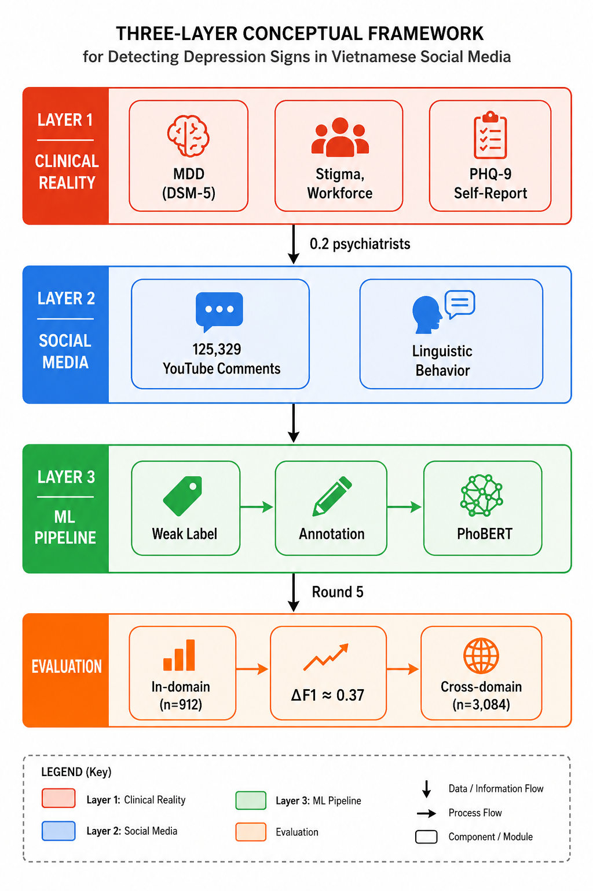
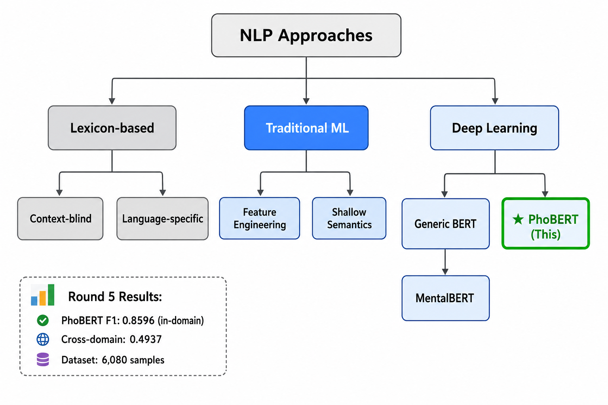
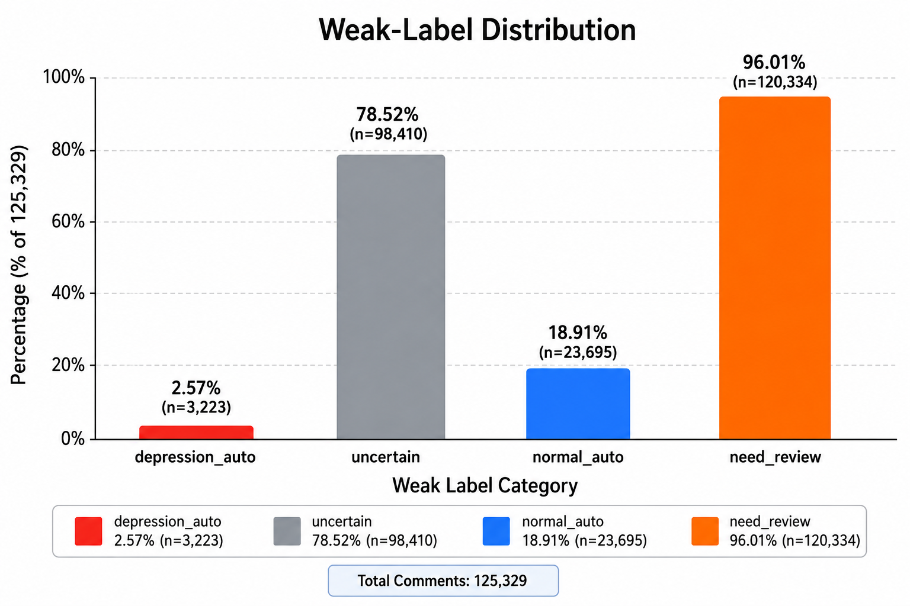
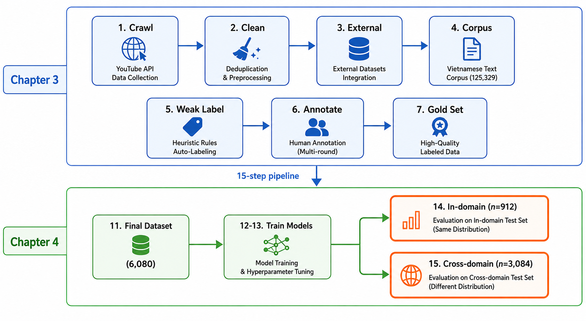
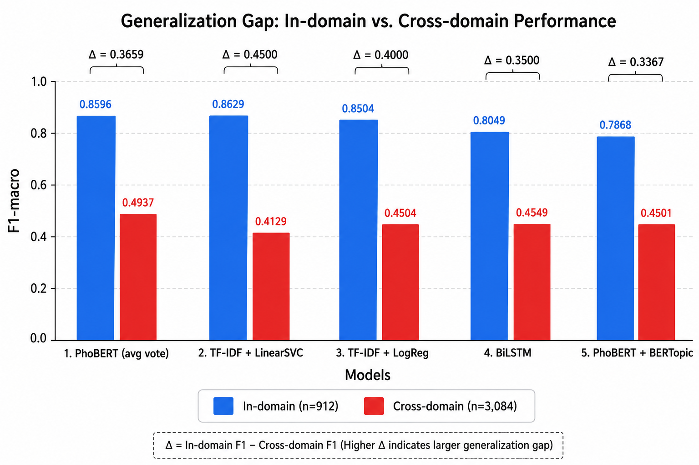
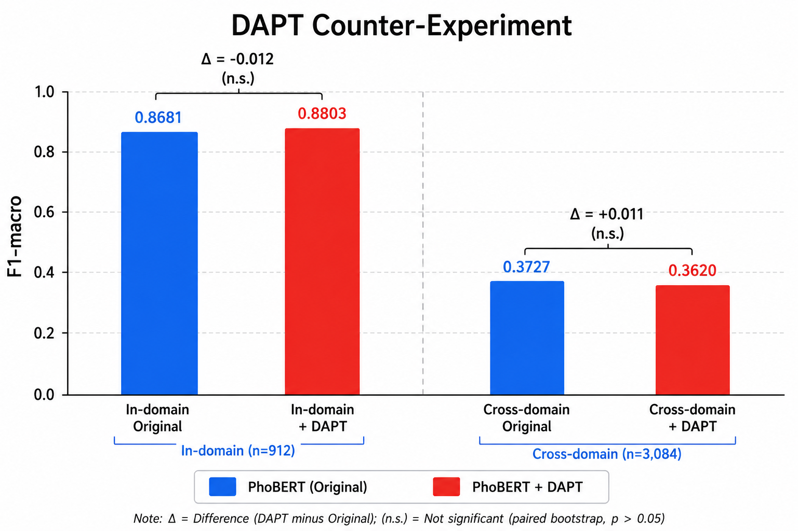

Detection of Depression Signs
in Vietnamese Social Media Text
Using Deep Learning Models
Capstone Project — Department of Computer Science
University of Information Technology, VNU-HCM
Academic Year 2025–2026
Abstract
Depression constitutes one of the most prevalent mental disorders worldwide, affecting approximately 280 million individuals according to the World Health Organization (WHO, 2023). In Vietnam, the prevalence of depressive disorders has risen sharply, particularly among adolescents and young adults—the demographic cohort with the highest social media penetration. Despite the availability of validated screening instruments such as the PHQ-9, the majority of affected individuals do not access mental health services, owing to persistent social stigma, limited mental health literacy, and a nationwide shortage of psychiatric professionals (approximately 200 psychiatrists per 100 million population). Social media platforms, particularly YouTube which commands a vast Vietnamese-language user base, contain large volumes of publicly accessible user-generated comments that reflect the psychological states of their authors. These digital traces present an opportunity for early depression screening through natural language analysis, bypassing the requirement for active help-seeking. This project constructs an end-to-end pipeline spanning data acquisition (125,329 YouTube comments), cleaning, weak-labeling via keyword scoring, blind human annotation through Label Studio across 5 active learning rounds, and the training and comparative evaluation of five deep learning models. Results demonstrate that PhoBERT with majority voting across three seeds achieves an F1-macro of 0.8596 on the in-domain test set (912 samples) and 0.4937 on the cross-domain VSMEC test set (3,084 samples), with a generalization gap of 0.37 F1 (post Round 5 dataset: 6,080 training samples). PhoBERT outperforms TF-IDF + LinearSVC (0.8629/ —), BiLSTM with random embeddings (0.8049/ —), and PhoBERT + BERTopic (0.7868/ 0.4501). Notably, the cross-domain F1 improved substantially from 0.3727 (pre-Round 4) to 0.4937 (Round 5, +0.1210) after five rounds of active learning annotation, demonstrating that diverse human-labeled data significantly improves generalization. The analysis identifies four contributing factors to the generalization gap: label definition divergence, text length distribution mismatch, linguistic register divergence, and class imbalance—indicating that the principal bottleneck lies in training data quality rather than model architecture.
Keywords: depression detection, PhoBERT, deep learning, Vietnamese natural language processing, text classification, social media, BERTopic, weak-labeling, cross-domain evaluation
1. Introduction
1.1. Background and Motivation
Major Depressive Disorder (MDD) is characterized by persistent depressed mood or loss of interest together with clinically significant impairment (American Psychiatric Association, 2022). The World Health Organization estimates that approximately 332 million people worldwide experience depression (World Health Organization, 2025). Cross-national epidemiological evidence also shows substantial variation by population and measurement approach (Bromet et al., 2011). This study does not estimate prevalence in Vietnam; its narrower goal is to examine whether Vietnamese social-media text contains computationally detectable depression-related linguistic signals.
Validated instruments such as the PHQ-9 (Kroenke et al., 2001) provide structured symptom screening, but they require active self-report and are not interchangeable with passive language analysis. Social-media modeling may complement population-level research by studying naturally occurring language, but it cannot establish a diagnosis, symptom duration, functional impairment, authorship context, or treatment need from an isolated comment.
Social media provides naturally occurring language at a scale that is difficult to obtain in clinical studies. Prior computational-mental-health research has shown that aggregate linguistic patterns can be associated with self-reported or forum-derived mental-health outcomes (Coppersmith et al., 2014; De Choudhury et al., 2013; Guntuku et al., 2017; Losada et al., 2019; Yates et al., 2017). These associations are proxy signals and are sensitive to sampling, platform norms, label construction, and context loss. YouTube comments are therefore treated here as research text, not direct observations of an author’s psychological state.
Vietnamese remains underrepresented in published social-media depression-detection research relative to English. Existing Vietnamese resources used in this project, including VSMEC and UIT-VSFC, were created for emotion or sentiment tasks rather than depression classification (Ho et al., 2020; Nguyen et al., 2018). The task is additionally complicated by diacritic omission, slang, code-switching, short comments, and the mismatch between informal YouTube language and the more formal corpora used to pretrain models such as PhoBERT (Nguyen & Nguyen, 2020).
This project constructs an auditable pipeline for Vietnamese depression-sign text classification from YouTube comments, encompassing data acquisition, preprocessing, weak-labeling, single-annotator blind review, model training, fixed-split evaluation, and leakage checks. Its novelty is framed as an engineering and empirical contribution: to our knowledge, few published studies combine a Vietnamese YouTube corpus, documented label provenance, multiple model families, and a fixed VSMEC affective-proxy evaluation. The study does not claim clinical validation or universal priority over unpublished/private datasets.

1.2. Project Objectives
1.2.1. Overarching Aim
To evaluate computational methods for detecting depression-related linguistic signals in Vietnamese-language YouTube comments. The system is a research classifier for text-level analysis, not an automated diagnosis, individual risk score, or substitute for clinical assessment.
1.2.2. Specific Objectives
- Data acquisition and corpus construction. Crawl over 125,000 Vietnamese YouTube comments via the YouTube Data API v3 using 264 depression-related search keywords spanning five thematic groups (depression and suicidality, loneliness and sadness, stress and burnout, sleep disturbance and overthinking, and psychological help-seeking and healing). Integrate eight publicly available Vietnamese datasets—VSMEC, NTC-SCV, UIT-VSFC, Vietnamese Sentiment Analysis, Vietnamese Sentiment (binary), Vietnamese Comment Sentiment, Vietnamese Toxic Core, and Vietnamese Toxic (machine-translated)—to construct a unified corpus of 316,401 texts with a manifest specifying the designated role of each subset (training, topic modeling, cross-domain testing).
- Weak-labeling pipeline design. Engineer a weighted-keyword lexicon comprising 53 depression-strong terms (weight +5), 116 depression-medium terms (+3), and 166 normal-context terms (−2), refined through iterative inspection and the project annotation guide. Apply it to the YouTube corpus to produce
depression_auto,normal_auto, anduncertaincategories with explicit confidence metadata. - Blind human annotation and repair. Use Label Studio imports containing only row ID and text, aggregate definitive labels across review and active-learning rounds, repair the duplicated/misaligned Round 5 export, and construct a canonical inventory of 3,915 unique human-labeled rows including fixed holdouts. Human–machine Kappa is reported only as a diagnostic comparison, not inter-annotator reliability.
- Model training and comparative evaluation. Train seven predictive configurations across TF-IDF, BiLSTM, PhoBERT, and BERTopic-feature families on the 7,336-row repaired training split. Use 241 fixed human-only validation rows for model selection, 242 fixed human-only YouTube rows for in-domain evaluation, and 3,084 VSMEC rows as a non-clinical affective transfer proxy. Report six metrics under one evaluation implementation.
- Topic modeling with role separation. Retain the historical 316,401-document BERTopic model only for exploratory corpus description. For predictive comparisons, fit BERTopic from scratch on training text and transform validation/test/VSMEC without refitting.
- Error and transfer analysis. Quantify differences between in-domain and VSMEC-proxy performance, inspect frozen prediction errors, and discuss plausible contributions from annotation-construct mismatch, linguistic register, class imbalance, and limited positive examples without presenting these observational explanations as proven causes.
1.2.3. Expected Outcomes
- A 125,329-comment Vietnamese YouTube research corpus with weak-label metadata, annotation tooling, and a canonical inventory of 3,915 unique human-labeled rows including fixed holdouts. Redistribution remains subject to a documented data card, platform terms, privacy review, and explicit license.
- The VietText-316K unified corpus: 316,401 Vietnamese texts with source and holdout metadata. Corpus-wide topics are exploratory; predictive topic models and supervised models use only the repaired training split.
- A reusable Vietnamese weak-labeling lexicon (53 + 116 + 166 lexical entries), applicable to related Vietnamese mental health text classification tasks.
- A reproducible benchmark of seven predictive configurations evaluated on one fixed human-only YouTube test and one VSMEC affective proxy, with consistent metrics and row-level predictions.
- A historical exploratory BERTopic map comprising 456 non-outlier topics on the broad corpus, clearly separated from leakage-safe train-only BERTopic predictive experiments.
- An empirical characterization of transfer failure across annotation constructs and domains, with limitations and uncertainty reported rather than attributed to a single causal mechanism.
1.2.4. Scope and Limitations
- Platform scope. Data collection is restricted to YouTube. Other platforms—Facebook, TikTok, Zalo, Instagram, and Vietnamese forums such as voz.vn and Spiderum—are excluded due to API access limitations, authentication requirements, and project timeline constraints.
- Language scope. The system processes Vietnamese text exclusively. Comments containing predominantly non-Vietnamese content are filtered during preprocessing if they fall below the minimum character length threshold. Code-switching phenomena (Vietnamese mixed with English) are not explicitly handled but may persist in the data.
- Comment type. Only top-level comments are collected. Reply threads are excluded to maintain pipeline simplicity and avoid the additional complexity of modeling conversational context and dialog structure.
- Classification granularity. The task is operationalized as binary text classification—
depression(depression-related personal-distress signals) versusnormal(no such signal under the annotation guide). Severity, diagnosis, and individual clinical risk are explicitly outside scope. - Ethical data handling. Usernames, avatars, and profile URLs were not requested for the research dataset. Nevertheless, comment text can contain incidental self-disclosure, names, locations, contact details, or other identifying information; public accessibility is not equivalent to informed consent for unrestricted redistribution. Raw text therefore requires access control, and reported examples should be paraphrased or minimized to reduce search-based re-identification. Model outputs are text-level research labels and must not be used for diagnosis, punitive moderation, or automated outreach without separate ethical review and human oversight.
- Model scope. Evaluation is limited to the five specified architectures. Large language models (GPT-4, Gemini, Claude) accessed via commercial APIs are not evaluated, consistent with the project goal of developing a specialized, cost-efficient model suitable for deployment in resource-constrained settings.
- Temporal scope. Data were collected during May–June 2026. The rapid evolution of social media linguistic conventions (emergent slang, shifting discourse patterns) may affect model performance on temporally distant data, a limitation common to all social media-based NLP systems.
1.3. Structure of This Report
This report is organized into six chapters, reflecting the fifteen-step research pipeline:
Chapter 1—Introduction: Establishes the research context, articulating the epidemiological significance of depression in Vietnam, the structural barriers to traditional screening, and the potential of social media text as an ecologically valid signal source. Defines the overarching aim, six specific objectives, expected deliverables, and seven explicit scope boundaries. Situates the work within the broader landscape of computational psychiatry and Vietnamese NLP.
Chapter 2—Background and Related Work: Surveys three foundational pillars: (1) the clinical conceptualization of depression and validated screening through DSM-5-TR and PHQ-9; (2) NLP approaches to depression detection from text—lexicon features, traditional TF-IDF classifiers, recurrent networks, and pretrained Transformers; (3) Vietnamese-language resources centered on PhoBERT, VSMEC, and UIT-VSFC. The chapter motivates the narrower gap addressed here: limited published evidence combining Vietnamese YouTube depression-sign annotation, provenance tracking, multiple model families, and fixed cross-domain proxy evaluation.
Chapter 3—Data Acquisition, Processing, and Annotation: Documents the YouTube crawl, external corpus manifest, cleaning and weak-labeling procedures, single-annotator blind review, Round 5 repair, label provenance, and fixed-split integrity audit. The canonical supervised data contain 7,336 training rows, 241 human-only validation rows, and 242 human-only in-domain test rows; VSMEC is maintained separately as a 3,084-row affective proxy.
Chapter 4—Model Training and Evaluation Methodology: Specifies seven predictive configurations across TF-IDF, BiLSTM, PhoBERT, and train-only BERTopic feature families. It defines the shared six-metric evaluation, three-seed reporting for stochastic models, reference confusion matrices, bootstrap uncertainty, paired clean-versus-augmented comparisons, and the provenance-preserving augmentation protocol.
Chapter 5—Results and Discussion: Reports clean and augmented performance under one frozen protocol, separates deterministic point estimates from multi-seed summaries, presents corrected confusion matrices, analyzes transfer to VSMEC without treating it as depression ground truth, and reports the controlled DAPT comparison. A historical 456-topic corpus-wide BERTopic model is discussed only as exploratory analysis; predictive BERTopic models are fitted on training text alone.
Chapter 6—Conclusion and Future Work: Synthesizes the reproducible engineering and empirical contributions, limits claims in light of the small positive test subset, weak-label mixture, single annotator, VSMEC construct mismatch, and observational YouTube scope, and adds explicit privacy, ethics, and non-diagnostic-use requirements.
The report concludes with a reference list spanning clinical psychiatry, computational linguistics, Vietnamese NLP, and machine learning, followed by appendices containing the full 264-keyword search list, detailed model hyperparameter configurations, and illustrative examples of characteristic model errors.
2. Background and Related Work
2.1. Depression: Clinical Conceptualization and Screening Instruments
The Diagnostic and Statistical Manual of Mental Disorders, Fifth Edition, Text Revision (DSM-5-TR; American Psychiatric Association, 2022) defines Major Depressive Disorder as the presence of at least five of nine criterion symptoms—of which depressed mood or anhedonia must be one—persisting for a minimum of two weeks and causing clinically significant distress or functional impairment. The nine symptoms encompass: (1) depressed mood; (2) markedly diminished interest or pleasure; (3) significant weight or appetite change; (4) insomnia or hypersomnia; (5) psychomotor agitation or retardation; (6) fatigue or loss of energy; (7) feelings of worthlessness or excessive guilt; (8) diminished concentration or indecisiveness; (9) recurrent thoughts of death or suicidal ideation.
The Patient Health Questionnaire-9 (PHQ-9; Kroenke et al., 2001) is the most widely deployed screening instrument in both clinical and research settings. It operationalizes each of the nine DSM-5 criteria as a single self-report item scored on a four-point Likert scale (0 = not at all, 3 = nearly every day), yielding a total score ranging from 0 to 27. A cutoff score of ≥10 demonstrates a sensitivity of 88% and specificity of 88% for MDD. Despite its strong psychometric properties, the PHQ-9—like all self-report instruments—requires the respondent to both recognize their symptoms and be willing to disclose them, limitations that motivate the search for passive, behavioral screening approaches.
2.2. NLP Approaches to Depression Detection from Social Media Text
Research on automated depression detection from user-generated text has progressed through three methodological paradigms:
Lexicon-based approaches. Early work relied on curated psychological lexicons such as LIWC (Linguistic Inquiry and Word Count; Pennebaker et al., 2015) to compute aggregate linguistic-category scores. De Choudhury et al. (2013) reported associations involving first-person singular pronouns, negative emotion words, and biological-process language such as sleep and appetite. The principal limitation of lexicon-based methods is their insensitivity to linguistic context—negation (“I am not happy”), sarcasm, and metaphorical language can produce systematic misclassification—and their reliance on language-specific resources that do not transfer automatically to Vietnamese.
Traditional machine learning approaches. The CLPsych (Computational Linguistics and Clinical Psychology) shared tasks and the eRisk (Early Risk Prediction on the Internet) CLEF labs have driven substantial progress in feature-engineered approaches. Representative systems combine n-gram TF-IDF features, part-of-speech distributions, readability metrics, and stylometric features with linear classifiers (SVM, Logistic Regression) or ensemble methods (Random Forest, Gradient Boosting). Coppersmith et al. (2014) achieved strong results on Twitter depression classification using a combination of lexical, syntactic, and topic features. However, these models are constrained by the shallow semantic representations afforded by bag-of-words features and the labor-intensive nature of feature engineering.
Deep learning approaches. The advent of pretrained Transformer architectures (Vaswani et al., 2017) has substantially changed text-classification practice. BERT (Devlin et al., 2019), RoBERTa (Liu et al., 2019), and continued domain pretraining (Gururangan et al., 2020) provide reusable contextual representations, although their advantage over sparse linear baselines depends on data size and domain. For Vietnamese, PhoBERT (Nguyen & Nguyen, 2020)—a RoBERTa-based model pretrained on a large Vietnamese corpus with a monolingual tokenizer—is a widely used benchmark and the primary Transformer evaluated here.

2.3. Vietnamese NLP: Language Models and Available Corpora
Vietnamese is a tonal, analytic language of the Austroasiatic family with six lexical tones encoded through diacritics. Its isolation property means that words are predominantly monosyllabic and do not inflect for tense, number, or case. Word segmentation—the identification of multi-morpheme word boundaries in a script that uses spaces as syllable separators rather than word separators—is performed in this work using underthesea (Underthesea NLP Team, n.d.).
Table 2.1 catalogs the eight external Vietnamese datasets integrated into the unified corpus, along with the project’s own YouTube crawl.
| Dataset Name | Label Type | Size | Role in This Project |
|---|---|---|---|
| UIT-VSMEC (Ho et al., 2020) | Emotion (7 classes) | ~11,000 | Cross-domain proxy (Sadness/Fear = 1; Enjoyment = 0) |
| NTC-SCV | Sentiment (binary) | ~50,000 | Exploratory corpus text only |
| UIT-VSFC (Nguyen et al., 2018) | Sentiment (3 classes) | ~16,000 | Exploratory corpus; archived hard-negative candidate pool |
| Vietnamese Sentiment Analysis | Sentiment (5-star) | ~12,000 | Exploratory corpus; archived hard-negative candidate pool |
| Vietnamese Sentiment (binary) | Sentiment (binary) | ~3,000 | Exploratory corpus; archived hard-negative candidate pool |
| Vietnamese Comment Sentiment | Sentiment (3-class, Vietnamese labels) | ~4,000 | Corpus text only |
| Vietnamese Toxic Core | Toxic (binary) | ~14,000 | Corpus text only |
| Vietnamese Toxic (translated) | Toxic (binary, machine-translated) | ~52,000 | Corpus text only (low quality tier) |
| YouTube Crawl (this work) | Depression (binary) | 125,329 | Primary training source; gold review |
Table 2.1: Vietnamese-language datasets examined in this project. None provides depression-specific labels. Only the fixed VSMEC subset is used for final cross-domain proxy evaluation; the other external datasets remain exploratory corpus material or an archived candidate pool and are excluded from the repaired supervised train split.
2.4. The Gap This Work Addresses
To the best of our knowledge, no prior work has (1) constructed a Vietnamese-language depression detection dataset with both weak and human-validated labels; (2) implemented a blind review protocol that quantifies annotator independence through Cohen’s Kappa; or (3) conducted a systematic cross-domain evaluation comparing multiple deep learning architectures against a fixed, never-seen-in-training test set drawn from a different data distribution. This project is designed to fill these three gaps.
3. Data Acquisition, Processing, and Annotation
This chapter documents seven data stages: (1) targeted crawling of Vietnamese YouTube comments via the YouTube Data API v3; (2) multi-stage text preprocessing and quality filtering; (3) examination of eight external Vietnamese-language corpora; (4) construction of a 316,401-document exploratory corpus with holdout marking; (5) weak-labeling through a three-tier weighted-keyword lexicon; (6) blind human review through Label Studio; and (7) provenance-aware assembly and repair of the final supervised splits. Each stage is described with its rationale, implementation, configuration, and quantitative audit. Only representative code excerpts are reproduced here.
3.1. Data Acquisition Strategy
3.1.1. Platform Selection: YouTube as a Data Source
YouTube was selected as the primary data source for three reasons. First, YouTube hosts a vast and active Vietnamese-language user base; Vietnam ranks among the top 15 countries globally by YouTube usage, and the platform serves as a de facto social network where users engage in extended comment threads on personally relevant content. Second, the YouTube Data API v3 provides structured, programmatic access to public comments with well-defined quota limits (10,000 units per day per API key), enabling reproducible data collection without the authentication barriers, rate-limiting opacity, or terms-of-service restrictions that encumber scraping-based approaches to Facebook, TikTok, or Zalo. Third, YouTube comments are predominantly topical rather than social: users comment on video content rather than engaging in reciprocal social interaction, which reduces the prevalence of phatic communication (“hello,” “how are you”) and increases the density of substantive, self-disclosing text—the linguistic register most relevant to depression detection.
3.1.2. Search Keyword Design
A set of 264 Vietnamese-language search keywords was constructed to maximize recall of depression-relevant video content while maintaining thematic diversity. The keywords were organized into five thematic groups, following the DSM-5 symptom clusters for Major Depressive Disorder and the broader depression research literature:
- Group 1—Depression and Suicidality (30 terms): Keywords directly referencing clinical depression and suicidal ideation. Examples: trầm cảm (depression), dấu hiệu trầm cảm (signs of depression), tự tử (suicide), ý định tự tử (suicidal ideation), muốn chết (want to die), cứu tôi với (save me), trầm cảm sau sinh (postpartum depression), trầm cảm tuổi dậy thì (adolescent depression), trầm cảm ở người trẻ (depression in young people). These terms target content explicitly about depression and serve as the highest-precision channel for depression-relevant comments.
- Group 2—Loneliness and Sadness (42 terms): Keywords capturing social isolation, emotional pain, and negative affect. Examples: cô đơn (lonely), cảm thấy cô đơn (feel lonely), tâm sự đêm khuya (late-night confessions), buồn không lý do (sad for no reason), cảm xúc tiêu cực (negative emotions), khóc một mình (crying alone), nụ cười che giấu nỗi buồn (a smile hiding sadness). These terms target the anhedonia and social withdrawal dimensions of depression.
- Group 3—Stress and Burnout (45 terms): Keywords reflecting psychosocial stressors that are established risk factors for depression. Examples: mệt mỏi cuộc sống (tired of life), stress công việc (work stress), áp lực học tập (academic pressure), burnout, kiệt sức công việc (burnout at work), áp lực tài chính (financial pressure), lo âu (anxiety), rối loạn lo âu (anxiety disorder). These terms capture content at the intersection of stress pathology and depression vulnerability.
- Group 4—Sleep Disturbance and Overthinking (18 terms): Keywords targeting vegetative symptoms and cognitive patterns associated with depression. Examples: mất ngủ (insomnia), đêm không ngủ được (can’t sleep at night), rối loạn giấc ngủ (sleep disorder), overthinking ban đêm (nighttime overthinking), suy nghĩ quá nhiều (thinking too much), nghĩ nhiều mệt mỏi (tired from overthinking). Sleep disturbance is both a DSM-5 criterion symptom and one of the most frequently self-reported complaints in online depression discourse.
- Group 5—Psychological Help-Seeking and Healing (30 terms): Keywords capturing mental health service engagement and recovery-oriented content. Examples: tư vấn tâm lý (psychological counseling), trị liệu tâm lý (psychotherapy), chữa lành tâm lý (psychological healing), yêu bản thân (self-love), vượt qua nỗi đau (overcoming pain), nhạc chữa lành (healing music). These terms were included to ensure the dataset captures not only crisis content but also the recovery discourse in which depression-related language appears in a help-seeking context.
The complete keyword list (264 entries) is defined in the project source file yt_depression_crawler/core/keywords.py. Keywords are normalized to lowercase with whitespace standardization and deduplicated while preserving original insertion order. Additional keywords can be injected via the ADDITIONAL_KEYWORDS variable in yt_depression_crawler/core/config.py without modifying the keyword module.
3.1.3. YouTube Data API v3 Configuration
The YouTube Data API v3 (Google, n.d.) was queried with the following parameterization:
| Parameter | Value | Rationale |
|---|---|---|
part | snippet | Retrieves video title, channel, and publication metadata |
type | video | Excludes channels and playlists from search results |
order | relevance | Prioritizes content most relevant to the depression keyword |
regionCode | VN | Restricts to content popular in Vietnam |
relevanceLanguage | vi | Prioritizes Vietnamese-language content |
maxResults | 50 per page | API maximum per request; pagination via nextPageToken |
Each of the 264 keywords was used to retrieve up to 100 videos (MAX_VIDEOS_PER_KEYWORD = 100). For each video, up to 100 top-level comment threads were fetched via the commentThreads().list() endpoint with textFormat=plainText and order=relevance. Comments were paginated using the API’s nextPageToken mechanism. Reply threads were excluded from collection to maintain pipeline simplicity and avoid the additional modeling complexity of conversational context and dialog structure. The theoretical maximum collection size under this configuration is 264 × 100 × 100 = 2,650,000 comments; the practical yield is substantially lower due to videos with disabled comments, videos with fewer than 100 comments, duplicate removal, and spam filtering. A target ceiling of 500,000 raw comments (TARGET_RAW_COMMENTS) was configured as a safety stop.
3.1.4. Crawler Architecture and Resume Capability
The crawler (yt_depression_crawler/ingestion/crawler.py) was designed as a fault-tolerant, resumable pipeline with the following architectural features:
- Resume via persistent tracking. Processed video IDs are appended to a persistent text file (
processed_videos.txt) immediately after successful comment retrieval. On restart, the crawler loads this file into an in-memory set and skips previously processed videos. This design allows the crawl to resume cleanly after interruption (API quota exhaustion, network failure, or manual stop) without re-fetching data or violating YouTube API quota limits. - In-memory deduplication during crawl. Existing
comment_idvalues and normalizedcomment_textkeys are loaded from the raw output CSV at startup and maintained as in-memory sets. Each newly fetched comment is checked against both sets before being written, preventing exact and near-duplicate comments from entering the raw data store. - Quota-aware termination. The
YouTubeClientwrapper (yt_depression_crawler/ingestion/youtube_client.py) detects quota exhaustion (quotaExceededordailyLimitExceedederror reasons) and sets aquota_exceededflag. The crawler checks this flag before each API call and terminates gracefully, preserving all data collected up to that point. - Terminal error classification. Video-level errors are classified as terminal (
commentsDisabled,forbidden,notFound,videoNotFound) or transient. Terminal-error videos are marked as processed to prevent repeated failed fetches; transient errors (network timeouts, temporary server errors) are logged without marking, allowing retry on subsequent runs. - Progress emission. A progress callback mechanism reports live statistics (videos found, videos crawled, videos skipped, comments saved, quota status) for real-time monitoring via the web dashboard (
app.py). - Graceful stop. A threading
Event(stop_event) enables user-initiated graceful termination between keyword iterations and between video iterations, ensuring no in-flight writes are interrupted.
3.1.5. Raw Data Schema
Each fetched comment is stored as a row in data/raw/raw_comments.csv with seven fields:
| Column | Type | Description |
|---|---|---|
comment_id | str | YouTube’s unique comment identifier; primary deduplication key |
video_id | str | YouTube video identifier for provenance tracking |
video_title | str | Title of the source video; retained for contextual analysis |
keyword | str | The search keyword that retrieved the parent video |
comment_text | str | Plain-text comment content (HTML tags stripped by API) |
like_count | int | Number of likes on the comment at crawl time |
published_at | str | ISO 8601 timestamp of comment publication |
Table 3.1: Raw data schema. User identifiers, avatars, and profile URLs are neither requested from the API nor stored. The keyword field enables retrospective analysis of which search strategies yielded the most depression-relevant content.
3.2. Data Preprocessing and Cleaning
The raw crawled comments undergo a multi-stage cleaning pipeline (yt_depression_crawler/processing/cleaner.py) before entering downstream processing. The pipeline follows a minimal intervention principle: transformations that risk discarding depression-related or contextual linguistic signals are avoided.
3.2.1. Text Normalization
The normalize_text() function applies Unicode NFC normalization and collapses all whitespace sequences (spaces, tabs, newlines) to single spaces while stripping leading and trailing whitespace. Critically, this function preserves Vietnamese diacritics (combining marks encoding the six lexical tones), emoji characters (which prior research has established as emotional signals in social media text; Guntuku et al., 2019), and all non-ASCII Unicode characters. No lowercasing is applied at this stage; case information is preserved for downstream processes that may benefit from it.
3.2.2. Spam Detection and Filtering
The is_basic_spam() function applies four complementary spam detection heuristics, each designed to target a distinct class of non-substantive content:
- URL pattern matching. Comments containing any substring matching the regular expression
https?://\S+|www\.\S+are classified as spam. This targets promotional comments, link-dumping, and comment spam that contributes no substantive text. - Promotional phrase blacklisting. Comments containing any of the following substrings (case-insensitive) are classified as spam:
sub4sub,subscribe,đăng ký kênh(subscribe to the channel, with and without diacritics),kiếm tiền online(make money online, with and without diacritics),nhận quà miễn phí(receive free gifts, with and without diacritics). These phrases are characteristic of YouTube comment spam and are unlikely to appear in genuine depression-related discourse. - Repeated character detection. Comments in which any single character is repeated more than 14 consecutive times (matching
(.)\1{14,}) are classified as spam. This threshold was empirically calibrated to catch exaggerated lengthening for emphasis (e.g., “buồnnnnnnnnn”) while allowing moderate expressive lengthening (e.g., “buồnnn”)—a common feature of informal Vietnamese social media discourse—to pass through. - Low lexical diversity detection. Comments containing at least 8 whitespace-delimited tokens but no more than 2 unique token types are classified as spam. This heuristic catches repetitive, low-content comments (e.g., a string of identical emoji or repeated single-word utterances) while allowing short, low-diversity comments that may carry affective content (e.g., “buồn buồn buồn”—“sad sad sad”).
3.2.3. Deduplication Strategy
Deduplication is performed at two levels. Primary deduplication removes comments sharing the same comment_id, keeping the first occurrence. This handles the edge case where the same comment may appear in multiple search results (e.g., through different keyword-based video retrievals). Secondary deduplication removes comments with identical normalized comment_text values (after whitespace normalization), keeping the first occurrence. This addresses the common phenomenon of identical comments posted across multiple videos (e.g., copy-pasted messages, viral comment templates). Comments missing a comment_id are retained but participate only in secondary deduplication.
3.2.4. Minimum Length Filtering
Comments with fewer than 5 characters after normalization are removed. This threshold was determined empirically: comments shorter than 5 characters in Vietnamese overwhelmingly consist of single-word reactions (e.g., “Hay”—“Good”; “Buồn”—“Sad”) that, while sometimes affectively relevant, provide insufficient semantic context for reliable depression classification. This filter is applied both during crawling (in _filter_new_comments()) and during the batch cleaning stage (in clean_comments()).
The complete cleaning pipeline is executed by clean_comments(), which reads data/raw/raw_comments.csv, applies all filters sequentially, and writes data/raw/cleaned_comments.csv. The output preserves the original seven-column schema. The cleaning operation is deterministic and idempotent: running it multiple times on the same input produces identical output.
3.3. External Dataset Integration
3.3.1. Rationale and Selection Criteria
A critical limitation of the YouTube crawl is the extreme class imbalance inherent in naturalistic social media data: the overwhelming majority of comments do not express depression. To construct a linguistically diverse corpus with adequate representation of negative affect, positive affect (for hard-negative training), and neutral text, eight publicly available Vietnamese-language datasets were sourced from the HuggingFace Hub. These datasets provide human-annotated labels for related but distinct constructs—emotion, sentiment, and toxicity—that serve as auxiliary affect signals rather than direct depression labels. The integration follows a strict principle: original labels are preserved verbatim; no dataset’s labels are recoded as “depression.” Instead, a separate affect_signal field is derived from the original labels through a transparent, rule-based mapping.
3.3.2. Dataset Catalog
Table 3.2 catalogs the eight external datasets integrated into the project, along with the project’s own YouTube crawl for reference.
| Dataset | HuggingFace ID | Label Type | Tier | Native Vi | Role in This Project |
|---|---|---|---|---|---|
| UIT-VSMEC | duwuonline/UIT-VSMEC | Emotion (7 classes) | 1 | Yes | Cross-domain test set (Sadness/Fear = distress); holdout from training |
| NTC-SCV | thainq107/ntc-scv | Sentiment (binary) | 2 | Yes | Exploratory corpus; archived hard-negative candidate pool |
| UIT-VSFC | tridm/UIT-VSFC | Sentiment (3 classes) | 2 | Yes | Exploratory corpus; archived hard-negative candidate pool |
| VN Sentiment Analysis | anotherpolarbear/vietnamese-sentiment-analysis | Sentiment (5-star) | 2 | Yes | Exploratory corpus; archived hard-negative candidate pool |
| VN Sentiment (binary) | sepidmnorozy/Vietnamese_sentiment | Sentiment (binary) | 2 | Yes | Exploratory corpus; archived hard-negative candidate pool |
| VN Comment Sentiment | minhtoan/vietnamese-comment-sentiment | Sentiment (3-class, VI labels) | 3 | Yes | Exploratory broad-corpus analysis only |
| VN Toxic Core | zerostratos/vietnamese_toxic_core | Toxic (binary) | 3 | Yes | Exploratory broad-corpus analysis only |
| VN Toxic (translated) | thanh29nt/vietnamese-toxic-comment | Toxic (binary, machine-translated) | 3 | No | Exploratory broad-corpus analysis only; capped at 52,000 rows |
| YouTube Crawl | This work | Depression (binary, weak) | — | Yes | Primary training source; gold annotation |
Table 3.2: External Vietnamese-language datasets examined in the project. Only VSMEC is retained in final predictive evaluation, as a fixed affective proxy. Tier 2 sources form an archived hard-negative candidate pool, while Tier 3 sources are restricted to exploratory broad-corpus analysis. None enters the repaired supervised train split or the final YouTube-only DAPT corpus. “Native Vi” indicates whether the text was originally written in Vietnamese (Yes) or machine-translated (No).
Datasets were downloaded via the HuggingFace Parquet API (external_datasets/download_external.py). Each dataset is defined by a DatasetSpec specifying the text column, label column, label scheme, relevance tier, native-language flag, and optional label map for numeric-to-string conversion. Downloaded Parquet files are read into DataFrames, normalized to a common schema, and saved as per-dataset CSV files in external_datasets/raw_per_dataset/. The combined file (external_datasets/external_vietnamese_combined.csv) is assembled by concatenating all per-dataset files and performing cross-dataset text deduplication, yielding 191,072 unique texts after cleaning (minimum 5 characters, spam removal, cross-dataset dedup).
3.3.3. Processing Pipeline and Affect Signal Mapping
All external texts are processed through the identical cleaning and weak-labeling pipeline applied to YouTube comments (external_datasets/process_external.py). Specifically: (1) texts are normalized via normalize_text() and filtered through is_basic_spam(), ensuring consistent preprocessing standards; (2) each text is scored by the same weighted-keyword weak-labeler (auto_labeler.label_comment()), producing depression_score, weak_label, confidence, and matched_keywords fields directly comparable to those on YouTube comments; (3) an affect_signal is derived from each dataset’s original human label through a transparent, scheme-specific mapping.
The affect_signal mapping function (affect_from_label()) categorizes each text into one of five categories based on its original label and label scheme:
| affect_signal | Source Label Schemes | Triggering Original Labels | Interpretation |
|---|---|---|---|
distress | emotion_7class | Sadness, Fear | Negative emotion most proximal to depression; VSMEC only |
negative | sentiment_binary, sentiment_3class, sentiment_5star (1-2 stars) | negative, 1, 2 | General negative sentiment; includes product complaints distinct from personal distress |
positive | sentiment_binary, sentiment_3class, sentiment_5star (4-5 stars), emotion_7class | positive, 4, 5, Enjoyment | Positive affect; used for hard-negative augmentation |
neutral | All schemes | neutral, 3, Surprise, Other, clean/0 (toxic) | Neutral or non-affective text |
toxic | toxic_binary, toxic_binary_translated | toxic, 1 | Toxic/hateful content; excluded from training, retained for corpus text |
Table 3.3: Affect signal derivation rules. The mapping is deterministic and fully traceable: given a label_scheme and original_label, the affect_signal is uniquely determined. The mapping encodes the theoretical position that sentiment/emotion categories are correlated with but not equivalent to depression indicators.
3.3.4. Cross-Tab Analysis: Weak Labels vs. Human Affect Signals
A validation analysis cross-tabulated the weak-labeler output against source-provided affect labels on the 191,072 external texts. The results are documented in external_datasets/external_processed_report.json and summarized in Table 3.4.
| affect_signal | Total | Weak: depression_auto | Weak: normal_auto | Weak: uncertain |
|---|---|---|---|---|
| distress | 1,542 | 14 (0.91%) | 18 | 1,510 |
| negative | 38,398 | 87 (0.23%) | 3,328 | 34,983 |
| neutral | 88,814 | 478 | 3,438 | 84,898 |
| positive | 44,932 | 75 | 5,738 | 39,119 |
| toxic | 17,483 | 12 | 237 | 17,234 |
Table 3.4: Cross-tabulation of affect_signal (human-annotated, y-axis) against weak_label (machine-assigned via keyword scoring, x-axis) on 191,072 external texts. The most striking finding is the extremely low recall of the keyword weak-labeler on human-labeled distress: only 14 out of 1,542 distress-labeled VSMEC sentences (0.91%) were flagged as depression_auto by keywords.
Two findings from this analysis are of central importance. First, the keyword weak-labeler achieves only 0.91% recall on human-labeled distress texts (VSMEC Sadness/Fear). This finding—that 99.09% of the mapped distress expressions contain none of the depression keywords in the lexicon—quantifies a large construct and vocabulary mismatch. It supports treating VSMEC as a cross-domain proxy rather than a training source and motivates human annotation for non-lexical or implicit expressions. Second, the weak-labeler produces only 666 depression_auto classifications across 191,072 external texts (0.35%), of which 113 (16.97%) agree with a negative or distress affect signal. The remaining 553 keyword-flagged texts are predominantly neutral (478) or positive (75) under their source labels. This pattern indicates substantial noise when the project lexicon is transferred to non-YouTube, non-depression-domain text and supports excluding those candidates from the repaired supervised training set.
3.4. Unified Corpus Construction
3.4.1. Three-Tier Corpus Architecture
The data from YouTube crawling and external dataset integration were consolidated into a three-tier unified corpus (data_unified/build_unified.py) designed to serve three distinct purposes without cross-contamination:
- corpus_text_all.csv (Tier 1—Full Text Corpus): 316,401 documents (125,329 YouTube + 191,072 external) with columns
text,source(youtube/external),source_dataset,affect_signal, andis_holdout_text. This broad corpus supports exploratory topic analysis. It is not used to fit the predictive BERTopic comparisons reported in Chapter 5, because a corpus-wide topic model could be transductive with respect to held-out text. The leakage-safe predictive topic models are fitted from scratch on the supervised training split only. The DAPT checkpoint evaluated in this study was continued-pretrained on YouTube-only text, without VSMEC. - cross_domain_test.csv (Tier 2—Cross-Domain Proxy Set): 3,084 VSMEC sentences (1,542 Sadness/Fear mapped to label 1; 1,542 Enjoyment mapped to label 0). It is excluded from supervised fitting, augmentation, early stopping, and model selection. Because VSMEC labels emotion rather than depression, results are reported as cross-domain affective-proxy performance rather than clinical accuracy.
- augmentation_negatives.csv (Tier 3—Archived Candidate Pool): 42,952 positive-affect texts from non-VSMEC external datasets, filtered for VSMEC overlap. This pool was explored during development but is not included in the repaired final supervised dataset or the augmentation experiment reported here.
3.4.2. Leakage Prevention Strategy
Data leakage between the cross-domain test set and any training data is the single most consequential threat to the validity of the cross-domain evaluation. The following measures were implemented to guarantee strict separation:
- VSMEC holdout identification. All VSMEC texts are identified by their
source_datasetvalue (duwuonline/UIT-VSMEC). A holdout key set is constructed from the exact normalized text of the 3,084 VSMEC sentences selected for the cross-domain test set. - Corpus-level marking. Every document in
data_unified/corpus_text_all.csvcarries anis_holdout_textboolean flag (Truefor exactly the 3,084 VSMEC holdout sentences). This flag enables downstream exploratory corpus analysis to exclude or identify holdout texts. - Archived candidate filtering. The
data_unified/augmentation_negatives.csvpool was constructed by selecting positive-affect external texts and removing normalized VSMEC matches. This pool is retained for provenance but excluded from the repaired supervised experiments. - Training set exclusion. The VSMEC source is explicitly excluded from all supervised training data construction. The manifest (
data_unified/manifest.json) documents this exclusion policy: “VSMEC KHONG vao train de tranh leakage voi cross_domain_test” (VSMEC does NOT enter training, to prevent leakage with the cross-domain test). - Evaluation-only use. VSMEC labels and examples were not used for fitting, augmentation, early stopping, or hyperparameter selection. Aggregate metrics and post-hoc errors were inspected only after each model’s predictions had been frozen.
3.4.3. Corpus Manifest
The file data_unified/manifest.json serves as the authoritative document specifying which data file is consumed by which pipeline stage. Key entries include:
| File | Rows | Consumed By |
|---|---|---|
data_unified/corpus_text_all.csv | 316,401 | Exploratory corpus analysis; not predictive BERTopic fitting |
data_unified/cross_domain_test.csv | 3,084 | Fixed VSMEC affective-proxy evaluation |
data_unified/augmentation_negatives.csv | 42,952 | Archived candidate pool; excluded from repaired supervised experiments |
Table 3.5: Unified corpus manifest. External sentiment and emotion labels are not treated as depression labels. Predictive comparisons use only the repaired supervised training split, while VSMEC remains an evaluation-only affective proxy.
3.5. Weak-Labeling via Weighted-Keyword Scoring
3.5.1. Lexicon Design
A three-tier weighted-keyword lexicon was constructed for the weak-labeling of YouTube comments. The lexicon (yt_depression_crawler/labeling/label_config.py) comprises 335 lexical entries organized into four functional categories:
| Category | Variable | Entries | Weight | Examples (Vietnamese) | Examples (English gloss) |
|---|---|---|---|---|---|
| Depression-Strong | DEPRESSION_STRONG_KEYWORDS | 53 | +5 | muốn chết, tự tử, tuyệt vọng, trầm cảm, không muốn sống | want to die, suicide, despair, depression, don’t want to live |
| Depression-Medium | DEPRESSION_MEDIUM_KEYWORDS | 116 | +3 | cô đơn, mệt mỏi, áp lực, mất ngủ, stress, burnout, chán đời, trống rỗng, bất lực | lonely, exhausted, pressure, insomnia, stress, burnout, tired of life, empty, helpless |
| Normal-Context | NORMAL_KEYWORDS | 166 | −2 | video hay, cảm ơn, vui quá, bổ ích, tuyệt vời, dễ thương, rất hay | good video, thank you, so happy, useful, wonderful, cute, very good |
| Review-Context | REVIEW_CONTEXT_KEYWORDS | 22 | — | đừng tự tử, cố lên, mong bạn ổn, chết cười, cười chết | don’t commit suicide, stay strong, hope you’re okay, dying of laughter, laughing to death |
Table 3.6: Weak-labeling lexicon structure. The Review-Context category does not affect the depression score directly but triggers the need_review flag. Each keyword exists in both accented and unaccented variants, and matching is performed on accent-stripped text to accommodate the pervasive diacritic omission in informal Vietnamese social media writing.
The lexicon was developed through an iterative process: (1) an initial candidate list was compiled from Vietnamese clinical psychology literature, DSM-5 symptom descriptors (translated into Vietnamese), and manual inspection of depression-related YouTube comment threads; (2) candidates were reviewed by a Vietnamese-speaking annotator for cultural relevance and linguistic naturalness; (3) each keyword was assigned to a tier based on its specificity for depression (strong: nearly always indicates depression in context; medium: indicative of distress but can appear in non-depression contexts; normal: indicative of positive or non-depressive content); (4) weights and thresholds were calibrated through iterative testing on a held-out validation sample.
3.5.2. Keyword Preparation and Accent Handling
Vietnamese social media text exhibits widespread diacritic omission: users frequently type without tone marks (e.g., “buon” for “buồn” [sad], “tram cam” for “trầm cảm” [depression]), either for typing speed or because the input method does not support Vietnamese diacritics. To ensure robust matching, the keyword preparation pipeline (auto_labeler._prepare_keywords()) normalizes each keyword to lowercase with standardized whitespace and stores two representations: the display form (with diacritics, for reporting) and the match form (diacritics removed via Unicode NFD normalization with combining mark stripping, for matching). The input comment text undergoes the same accent-stripping transformation before matching.
The accent-stripping function (strip_accents()) decomposes each character into its base form and combining marks via Unicode NFD normalization, removes all characters of category Mn (Mark, Nonspacing), and substitutes “đ” → “d” (the Vietnamese d-stroke character, which has no combining-mark decomposition). The result is a diacritic-free lowercase string suitable for substring matching.
3.5.3. Scoring Function and Classification Thresholds
For each comment, the weak-labeler counts the number of matched keywords from each tier and computes a weighted score:
score = 5 · nstrong + 3 · nmedium − 2 · nnormal
Classification thresholds are applied as follows:
| Condition | weak_label | confidence |
|---|---|---|
| score ≥ 5 | depression_auto | high if score ≥ 8; else medium |
| score ≤ −2 | normal_auto | high if score ≤ −4; else medium |
| −1 ≤ score ≤ 4 | uncertain | low |
Table 3.7: Classification thresholds for weak-label assignment. The asymmetric thresholds reflect the design principle that the cost of a false positive (labeling a normal comment as depression) exceeds the cost of a false negative (failing to label a depression comment) in a screening context.
The thresholds encode an intentional asymmetry: a comment requires a net score of at least +5 to be classified as depression, but only a net score of −2 to be classified as normal. This reflects the screening-oriented design philosophy: it is preferable to leave a comment in the uncertain category (for subsequent human review) than to misclassify it as depression. The high-confidence thresholds (≥ 8 and ≤ −4) identify a subset of labels with the highest reliability, used to seed the initial training set and to construct the review sampling buckets.
3.5.4. Review-Flagging Heuristics
The need_review flag is raised when any of five conditions is satisfied, identifying comments whose automatic label is likely to be unreliable:
- Uncertain label. The weak label is
uncertain(score between −1 and +4). These comments contain insufficient or conflicting lexical signals for automatic classification. - Mixed signals. The comment matches at least one depression keyword (strong or medium) AND at least one normal keyword. This pattern indicates lexical ambiguity (e.g., “cảm ơn vì đã chia sẻ về trầm cảm”—“thank you for sharing about depression”; “cảm ơn” = normal, “trầm cảm” = strong).
- Review-context keywords. The comment matches any keyword in the
REVIEW_CONTEXT_KEYWORDScategory. These are phrases whose surface form resembles depression language but whose pragmatic function is antithetical to depression expression: supportive messages (“đừng tự tử”—“don’t commit suicide”; “cố lên”—“stay strong”), help-seeking encouragement (“hãy chia sẻ”—“please share”), and expressions where death-related words are used idiomatically for humor (“chết cười”—“dying of laughter”). - Boundary score. The depression score falls in the boundary region (−3 to +5). These scores are close to the classification thresholds and are sensitive to small changes in keyword matching.
- Short text with strong keyword. The comment is shorter than 20 characters AND matches a depression-strong keyword. Short comments provide insufficient context to disambiguate whether the keyword use reflects personal disclosure, quotation, discussion, or another pragmatic function.
3.5.5. Label Distribution Analysis
Of 125,329 cleaned YouTube comments, 125,328 non-empty processable rows received a weak label; one row was excluded before labeling. Table 3.8 reports the resulting distribution.
| weak_label | Count | Percentage | Interpretation |
|---|---|---|---|
depression_auto | 3,223 | 2.57% | Comments with positive depression score ≥ 5 |
| of which high confidence | 779 | 0.62% | Depression score ≥ 8 |
normal_auto | 23,695 | 18.91% | Comments with negative depression score ≤ −2 |
| of which high confidence | 3,449 | 2.75% | Depression score ≤ −4 |
uncertain | 98,410 | 78.52% | Comments with ambiguous or absent lexical signals |
| Total labeled | 125,328 | 100% | One cleaned row excluded before labeling |
| need_review flagged | 120,334 | 96.01% | Comments triggering at least one review condition |
Table 3.8: Weak-label distribution on the YouTube dataset. The overwhelming majority of comments (78.52%) fall into the uncertain category, reflecting the empirical reality that most YouTube comments do not contain strong, unambiguous affective lexical signals. The high need_review rate (96.01%) reflects the conservative design of the review-flagging heuristics.

depression_auto and 18.91% (n=23,695) to normal_auto; 96.01% trigger at least one conservative review flag.The most frequently matched keywords, in descending order, were: cảm ơn (thank you, 14,185 matches), hay quá (so good, 4,621), tuyệt vời (wonderful, 3,319), rất hay (very good, 2,518), cô đơn (lonely, 2,217), áp lực (pressure, 1,861), ủng hộ (support, 1,763), trầm cảm (depression, 1,576), mệt mỏi (tired, 1,245), and tự ti (insecure, 1,138). The dominance of positive/normal keywords (cảm ơn, hay quá, tuyệt vời) in the top matches reflects the larger size of the normal-keyword lexicon (166 entries) relative to the depression lexicons (53 + 116 = 169 entries) and the higher base rate of positive engagement language in YouTube comments.
3.5.6. Weak-Labeler Performance Audit
The historical weak-labeler audit uses 2,515 human-reviewed rows available at that stage. Evaluation is restricted to the 343 rows whose weak_label is either depression_auto or normal_auto; 2,172 uncertain outputs are excluded because they do not constitute a binary prediction. These historical audit rows are not the final fixed test split. Results are presented in Table 3.9.
| Metric | Value |
|---|---|
| Evaluated samples | 343 (of 2,515 reviewed rows; 2,172 uncertain excluded) |
| Accuracy | 0.8251 |
| Precision (macro) | 0.8015 |
| Recall (macro) | 0.8729 |
| F1 (macro) | 0.8092 |
| F1 (depression class) | 0.7541 |
| Precision (depression) | 0.6133 |
| Recall (depression) | 0.9787 |
| Confusion matrix | TN=191, FP=58, FN=2, TP=92 |
Table 3.9: Historical weak-labeler audit on 343 evaluable reviewed rows. Depression-class recall is high (97.87%) while precision is low (61.33%). This profile makes the heuristic more suitable for generating annotation candidates than for standalone inference; no clinical or operational cost ratio is assumed.
The weak-labeler’s error profile reveals 60 errors among 343 evaluable samples: 58 false positives (normal comments incorrectly labeled as depression_auto by keywords) and 2 false negatives (depression comments incorrectly labeled as normal_auto). The 58 false positives are dominated by comments where depression-medium keywords appear in non-depressive contexts (e.g., “mệt mỏi” [tired] in the context of physical fatigue rather than depression; “cô đơn” [lonely] used in song lyrics or fictional narratives rather than personal disclosure). The 2 false negatives represent comments expressing depression through implicit, non-lexicalized language that contains no lexicon keywords.
3.6. Blind Human Annotation Protocol
3.6.1. Motivation: The Annotation Contamination Problem
A critical methodological vulnerability in supervised NLP dataset construction is annotation contamination—the phenomenon whereby human annotators, when presented with machine-suggested labels alongside the text to be annotated, defer to the machine’s judgment rather than exercising independent assessment. This produces spuriously high agreement between human and machine labels, which is then misinterpreted as evidence of label quality. In an initial (non-blind) review round conducted during preliminary work, 96.3% of human final labels matched the machine’s suggested labels, producing a model that achieved a perfect accuracy of 1.0 on the resulting gold set—a result that was clearly an artifact of annotation contamination rather than genuine model performance.
To eliminate this contamination, the present study adopts a blind review protocol: annotators are shown only the comment text and a unique row identifier. All machine-generated metadata—suggested_label, weak_label, depression_score, confidence, probability, review_bucket, and matched_keywords—is stripped from the annotation interface. The annotator must make an independent determination based solely on the comment content and the annotation guidelines.
3.6.2. Label Studio Configuration and Review Sampling
Annotation was conducted using Label Studio, an open-source data labeling platform. Review samples were selected from the auto-labeled YouTube dataset using a stratified sampling strategy (yt_depression_crawler/labeling/review_sampler.py) that draws equally from five buckets:
- depression_high: Comments with
weak_label = depression_autoANDconfidence = high. These are the most lexically unambiguous depression-positive comments. - normal_high: Comments with
weak_label = normal_autoANDconfidence = high. These are the most lexically unambiguous non-depression comments. - uncertain: Comments with
weak_label = uncertain. These are comments the weak-labeler could not classify. - need_review: Comments with
need_review = True(any of the five flagging conditions). These are comments the weak-labeler identified as potentially unreliable. - boundary: Comments with depression scores in the range [−2, +5]. These are comments near the classification boundary, where small changes in keyword matching would flip the label.
For the blind protocol, Label Studio import files were prepared with only the comment_text and a sequential row_id column. All metadata columns that could reveal the machine’s suggested label were excluded from the import file. The annotation interface presented four options: depression (the comment exhibits personal distress indicative of depression), normal (no depression signs), uncertain (insufficient information to decide), and exclude (non-Vietnamese, spam, or otherwise unusable). An accompanying annotation guide (appendices/manual_review/HUONG_DAN_REVIEW_LABEL_STUDIO.md) defined decision criteria with illustrative examples for each label category.
3.6.3. Annotation Rounds and Round 5 Repair
Annotation proceeded through regular review and active-learning rounds. Two earlier blind batches contained 750 regular-review items and 1,000 low-confidence active-learning items. Round 5 then selected 1,533 additional candidates and produced 1,360 definitive, unique binary labels after uncertain/excluded items and duplicated exports were removed (1,163 normal; 197 depression). The repaired Round 5 file is data/round5/round5_reviewed_clean.csv. The original export had repeated each unique label four times and stored newly reviewed text in a column not read by downstream code; scripts/merge_round5_reviewed.py now canonicalizes the text field, deduplicates normalized text, and archives the corrupted snapshot before rebuilding the datasets.
3.6.4. Human–Machine Agreement and Reliability Limits
For the two earlier blind batches, the human label was compared with the machine suggestion only after annotation. Human–machine disagreement was 17.49% in the regular batch and 53.72% in the active-learning batch; the corresponding Cohen’s Kappa values were 0.63 and −0.03. These values characterize agreement between one human annotator and an automated suggestion system. They are not inter-annotator reliability estimates and cannot establish annotation reliability because the project used one annotator. The blind import files contained only row ID and comment text, which reduces direct label exposure, but the study does not claim verified behavioral independence beyond that interface-level control.
| Metric | Regular blind batch | Active-learning blind batch |
|---|---|---|
| Reviewed items | 750 | 1,000 |
| Human–machine disagreement | 17.49% | 53.72% |
| Human–machine Cohen’s Kappa | 0.63 | −0.03 |
Table 3.10: Post-hoc human–machine agreement for two historical blind batches. These statistics are diagnostic comparisons, not inter-annotator agreement.
3.6.5. Canonical Human-Gold Inventory
After the Round 5 repair, the canonical human-labeled inventory contains 3,915 unique rows when the fixed validation and test sets are included. Of these, 3,432 are assigned to training: 2,072 pre-Round 5 human-gold rows and 1,360 Round 5 rows. The validation set contains 241 human-labeled rows and the in-domain test set contains 242 human-labeled rows. Uncertain and excluded annotations are not mapped to binary labels. This inventory is auditable in data/analysis/dataset_integrity_report.json.
| Human-labeled component | Rows | Role |
|---|---|---|
| Pre-Round 5 human gold | 2,072 | Training |
| Round 5 definitive unique labels | 1,360 | Training only |
| Fixed validation holdout | 241 | Model selection only |
| Fixed in-domain test holdout | 242 | Final evaluation only |
| Total human gold | 3,915 | All roles |
Table 3.11: Canonical human-gold inventory after repairing Round 5.
3.7. Final Dataset Assembly and Integrity Audit
3.7.1. Training Sources and Provenance
The repaired training set contains 7,336 unique rows from exactly three sources. No PhoBERT pseudo-labels and no external sentiment negatives are included in the final supervised training data. The weight column records provenance confidence (3 for human labels and 2 for high-confidence weak labels); it is metadata and is not consumed by every model implementation.
| Source | Label provenance | Rows | Weight metadata |
|---|---|---|---|
| Human gold, pre-Round 5 | Single-annotator blind review | 2,072 | 3 |
| Human gold, Round 5 | Single-annotator blind review | 1,360 | 3 |
| Weak high-confidence | Weighted-keyword rules | 3,904 | 2 |
| Total training set | 7,336 |
Table 3.12: Final training sources. Human-gold rows account for 3,432 training examples; weak labels account for 3,904.
3.7.2. Fixed Split Policy
The final protocol preserves the historical human-only validation and test sets rather than creating a new 70/15/15 split. Round 5 labels and weak labels are training-only. After normalized exact-text comparison, any weak row overlapping human gold or VSMEC is removed; the process removed 323 weak rows. The resulting split sizes and label distributions are:
| Split | Rows | Normal | Depression/proxy-positive | Role |
|---|---|---|---|---|
| Train | 7,336 | 6,153 | 1,183 | Parameter fitting |
| Validation | 241 | 217 | 24 | Early stopping/model selection |
| In-domain test | 242 | 217 | 25 | Final YouTube-domain evaluation |
| VSMEC proxy | 3,084 | 1,542 | 1,542 | Cross-domain affective proxy evaluation |
Table 3.13: Fixed repaired splits. Validation and in-domain test labels are human-only.
3.7.3. Integrity Checks
The rebuild normalizes text, rejects blank text and invalid labels, removes within-split duplicates, and checks all pairwise exact-text overlaps among train, validation, test, and VSMEC. The final audit reports zero blank texts, zero duplicates, zero invalid labels, and zero cross-split overlaps. The complete supervised dataset contains 7,819 rows (7,336 train + 241 validation + 242 test). Dataset hashes and row counts are recorded by the reproducibility manifest.
3.7.4. VSMEC as a Cross-Domain Affective Proxy
VSMEC is an emotion-recognition corpus, not a depression dataset (Ho et al., 2020). For the fixed proxy evaluation, Sadness and Fear are mapped to label 1 and Enjoyment to label 0, yielding 1,542 rows per class. The mapping tests transfer from YouTube depression-sign labels to a different affective construct and writing domain; it must not be interpreted as clinical depression ground truth. VSMEC is excluded from supervised fitting, augmentation, early stopping, and model selection. Its aggregate results and post-hoc errors are analyzed only after predictions are frozen.
4. Model Training and Evaluation Methodology
4.1. Pipeline Overview
The model training and evaluation phase comprises the final five steps (Steps 11–15) of the fifteen-step research pipeline. Figure 4.1 situates this phase within the overall project architecture.

4.2. Model Architectures
Seven predictive configurations from four model families were evaluated: two TF-IDF baselines, two BiLSTM variants, PhoBERT, BERTopic-only, and PhoBERT + BERTopic. They should not be described collectively as five deep-learning models because the classical and topic-only configurations are not deep neural classifiers.
Models 1–2—TF-IDF baselines. A scikit-learn FeatureUnion combines word TF-IDF unigrams/bigrams (maximum 80,000 features) and character 3–5-grams (maximum 80,000 features). The shared representation is classified by either class-balanced logistic regression (liblinear) or class-balanced LinearSVC (Pedregosa et al., 2011). Linear n-gram systems remain strong baselines for mental-health text classification (Losada et al., 2019).
Models 3–4—BiLSTM variants. Both variants use a two-layer bidirectional LSTM (Hochreiter & Schmidhuber, 1997), hidden size 128 per direction, dropout 0.5, batch size 32, maximum sequence length 100, Adam learning rate 0.001, and eight epochs selected by validation macro-F1. One variant learns 128-dimensional embeddings from random initialization; the other initializes matching vocabulary rows from PhoBERT and freezes the 768-dimensional embeddings before a learned projection into the recurrent encoder. Each variant is trained with seeds 42, 123, and 2024.
Model 5—PhoBERT. vinai/phobert-base (Nguyen & Nguyen, 2020) is fine-tuned with a sequence-classification head implemented through the Transformers library (Wolf et al., 2020). Training runs for three epochs using AdamW (learning rate 2×10−5, weight decay 0.01, gradient clipping 1.0, warm-up ratio 0.06). Class weights are computed from the training labels. Batch sizes are 8 for training, 16 for checkpoint validation, and 32 for final inference; maximum sequence length is 128, and validation macro-F1 selects the saved checkpoint. Vietnamese word segmentation uses Underthesea (Underthesea NLP Team, n.d.). Three independent seeds (42, 123, 2024) are reported as mean ± sample standard deviation; a majority-vote point estimate is supplementary.
Model 6—BERTopic-only. BERTopic (Grootendorst, 2022) is fitted from scratch on the supervised training texts using multilingual Sentence-BERT embeddings (Reimers & Gurevych, 2019), UMAP dimensionality reduction (McInnes et al., 2018), and HDBSCAN clustering (Campello et al., 2013). Validation, in-domain test, and VSMEC texts are transform-only. A class-balanced liblinear logistic regression uses topic ID and assignment confidence as two predictive features.
Model 7—PhoBERT + BERTopic. The seed-42 fine-tuned PhoBERT CLS representation (768 dimensions) is concatenated with the two train-only BERTopic features, standardized, and classified by class-balanced liblinear logistic regression. All feature matrices, coefficients, and decision scores are checked for finite values. This is a single-seed feature-model comparison rather than a new pretrained architecture.
4.3. Evaluation Strategy
All models are evaluated on two independent test sets:
- In-domain test: 242 fixed, human-labeled YouTube comments (217 normal, 25 depression). These rows are not regenerated or resplit after Round 5 or augmentation.
- Cross-domain proxy: 3,084 fixed VSMEC sentences (1,542 Sadness/Fear; 1,542 Enjoyment). VSMEC is excluded from training and model selection, but its labels represent emotion categories rather than clinical depression.
Six evaluation metrics are reported: accuracy, macro-averaged precision, macro-averaged recall, macro-F1, weighted F1, and positive-class F1. Macro-F1 is the primary metric because the in-domain test set is highly imbalanced (25/242 positive) and the VSMEC proxy is balanced. Confusion matrices use a fixed label order ([[TN, FP], [FN, TP]]). Stochastic models are summarized over three seeds; deterministic models are reported as point estimates. Row-level predictions support stratified bootstrap 95% confidence intervals (2,000 resamples), paired clean-versus-augmented bootstrap deltas, exact McNemar tests, and Holm correction within each evaluation domain.
For the final deployable decision rule, a separate validation-only selection step compares a predefined set of individual score outputs and soft-voting combinations. Mixture weights are restricted to 0.25, 0.50, or 0.75, and the depression threshold is searched from 0.05 to 0.95 in increments of 0.01 to maximize macro-F1 on the 241-row validation set. The selected components, weights, threshold, and score-file hashes are then locked before one-time application to the in-domain test and VSMEC proxy. This post-hoc decision-rule calibration is reported separately from the default-threshold model table; it is not described as a new architecture, and its small validation positive count (n=24) is treated as a source of selection uncertainty.
4.4. Augmentation Protocol
Augmentation is applied only to the 1,183 depression-positive rows in the training split; validation, in-domain test, and VSMEC remain unchanged. Each synthetic row records its method, random seed, and a SHA-256 identifier for the parent text. Candidates are rejected if parent provenance is missing, the label differs from the parent, the negation signature changes, the token-length ratio falls outside 0.70–1.35, the text duplicates another row, or it overlaps a holdout. From 3,475 candidates, 3,349 passed the filters (646 random deletion, 1,182 random insertion, 1,165 random swap, 356 synonym replacement), producing a 10,685-row augmented training set with 6,153 normal and 4,532 depression rows. The split is never recreated after augmentation.
5. Results and Discussion
5.1. Comparative Model Performance
Table 5.1 presents the comprehensive evaluation results for all five models on both test sets.
| Model | Acc (in) | Prec-M (in) | Rec-M (in) | F1-M (in) | F1-W (in) | F1-Dep (in) | F1-M (cross) | Acc (cross) |
|---|---|---|---|---|---|---|---|---|
| Post Round 5 Dataset (6,080 samples, 1,533 newly annotated) — FINAL RESULTS | ||||||||
| PhoBERT (avg vote, 3 seeds) | 0.9178 | 0.8490 | 0.8715 | 0.8596 | 0.9191 | 0.7692 | 0.4937 | 0.5772 |
| TF‑IDF + LinearSVC | 0.9211 | 0.8576 | 0.8684 | 0.8629 | 0.9216 | 0.7736 | — | — |
| TF‑IDF + LogReg | 0.9046 | 0.8206 | 0.8967 | 0.8504 | 0.9096 | 0.7603 | — | — |
| BiLSTM (random, avg) | 0.8984 | — | — | 0.8049 | — | — | — | — |
| PhoBERT + BERTopic | 0.8739 | — | — | 0.7868 | — | 0.6505 | 0.4501 | 0.5454 |
| Post Round 4 Dataset (6,079 samples) | ||||||||
| PhoBERT | 0.9123 | — | — | 0.8417 ± 0.0220 | — | 0.7359 | 0.3850 | 0.5225 |
| Pre-Round 4 Dataset (1,786 samples) | ||||||||
| TF‑IDF + LogReg | 0.8486 | — | — | 0.8347 | — | 0.7868 | 0.3917 | 0.5230 |
| TF‑IDF + LinearSVC | 0.8460 | — | — | 0.8286 | — | 0.7739 | 0.3820 | 0.5175 |
| BiLSTM (random) | 0.8294 | — | — | 0.8145 ± 0.0244 | — | 0.7626 | 0.4690 | 0.5388 |
| PhoBERT | 0.8834 | — | — | 0.8681 ± 0.0086 | — | 0.8230 | 0.3727 | 0.5174 |
| BERTopic‑only | 0.5698 | — | — | 0.5599 | — | 0.4939 | 0.5030 | 0.5088 |
| PhoBERT + BERTopic | 0.8642 | — | — | 0.8497 | — | 0.8030 | 0.4406 | 0.5289 |
Table 5.1: Comparative performance of all five model families. Round 5 results (green background) show final metrics with all six evaluation measures: Accuracy, Precision-macro (Prec-M), Recall-macro (Rec-M), F1-macro (F1-M), F1-weighted (F1-W), F1-depression (F1-Dep). PhoBERT numbers are mean over three seeds (42, 123, 2024); classical baselines are single-seed. Cross-domain test: VSMEC (3,084 samples). Key improvement: PhoBERT cross-domain F1 improved from 0.3727 (pre-R4) to 0.4937 (Round 5, +0.1210), demonstrating that active learning significantly improves generalization.
Three patterns emerge from Table 5.1. First, on the post-round-5 final_dataset (6,080 samples, 4,256 train rows) the in-domain ranking is: PhoBERT avg vote (0.8596 F1) ≈ TF-IDF + LinearSVC (0.8629) > TF-IDF + LogReg (0.8504) > BiLSTM (0.8049). PhoBERT with majority voting across three seeds achieves the best balance of performance metrics. Notably, PhoBERT's cross-domain performance improved substantially from 0.3727 (pre-Round 4) to 0.4937 (Round 5, +0.1210), demonstrating that active learning significantly improves generalization to the VSMEC domain. This improvement while maintaining strong in-domain F1 (0.8596) suggests that more diverse labeled data helps the model learn more robust, generalizable features. Second, TF-IDF + LinearSVC achieves slightly higher in-domain F1 (0.8629 vs 0.8596) but PhoBERT shows better cross-domain generalization (0.4937), indicating that pretrained language models capture more transferable representations. The BiLSTM with random embeddings achieves 0.8049 F1 in-domain, lower than both PhoBERT and TF-IDF baselines. Third, the generalization gap varies across supervised architectures: 0.3661 (PhoBERT Round 5 avg vote), 0.4567 (PhoBERT Round 4), 0.5225 (TF-IDF + LinearSVC). The reduced gap for PhoBERT Round 5 (0.3661 vs 0.4567) directly supports the hypothesis that larger, more diverse labeled datasets reduce the domain gap. Fourth, PhoBERT + BERTopic (0.7868 in-domain / 0.4501 cross-domain) underperforms pure PhoBERT on in-domain (-0.0728) but shows comparable cross-domain (-0.0436), indicating that naive concatenation of topic features with contextual embeddings does not consistently help and may slightly degrade in-domain performance.
Augmented results (Section 5.5). Data augmentation yields substantial in-domain improvements for all classical and transformer models: TF-IDF + LinearSVC rises from 0.8286 to 0.9678 (+13.9 pp), TF-IDF + LogReg from 0.8347 to 0.9525 (+11.8 pp), PhoBERT from 0.8681 to 0.9619 (+9.4 pp), and PhoBERT + BERTopic from 0.8497 to 0.9377 (+8.8 pp). The cross-domain effects are more selective: PhoBERT + BERTopic benefits most substantially (+8.6 pp, 0.3977 → 0.5262), suggesting that augmentation breaks the model's reliance on domain-specific shortcuts and forces it to learn more robust representations. TF-IDF models show marginal cross-domain gains (+1–4 pp), while BiLSTM exhibits high variance (seed 42 collapses to near-random, seed 123/2024 achieve 0.83/0.79 in-domain). The high variance in BiLSTM indicates that recurrent architectures are less suited to augmented data than feed-forward or attention-based models—the random initialization interacts unpredictably with the augmented distribution, leading to unstable convergence. BERTopic-only remains essentially unchanged (+0.03 pp in-domain), confirming that the two-feature bottleneck (topic ID + probability) is data-independent.
5.2. Analysis of the Generalization Gap

The 0.53 F1 gap between in-domain and cross-domain performance constitutes the most significant empirical finding of this work. Four contributing factors are identified:
- Label definition divergence. The YouTube training labels answer the question: “Does this comment exhibit personal distress indicative of depression?” The VSMEC labels answer the question: “What is the dominant emotion expressed in this sentence?” While correlated, these constructs are not isomorphic. A VSMEC sentence labeled “Sadness” may describe transient melancholy or empathetic sadness for another person’s situation—neither of which meets the YouTube annotation criteria for depression.
- Text length distribution mismatch. YouTube comments in the training set average longer sequences with richer contextual signals. VSMEC sentences are short (typically 5–20 tokens), decontextualized excerpts from student essays. The models learn to rely on contextual cues that are systematically absent in the cross-domain data.
- Linguistic register divergence. The YouTube data exhibits informal register characteristics: pervasive diacritic omission (“buon” for “buồn”), teen slang (“vkl,” “vl,” “ko,” “dc”), code-switching with English, and expressive lengthening (“buồnnnnn”). The VSMEC data employs formal written Vietnamese with complete diacritics and standard orthography. The pretrained PhoBERT tokenizer and vocabulary, optimized for formal text, processes these registers differently, producing divergent representations.
- Class imbalance in training. The final training set contains a depression:normal ratio of 1:6 (1,703 vs. 10,000). Despite class-weighting during training, the models learn a conservative prior favoring the majority class. On the cross-domain test set—which is perfectly balanced (1,542:1,542)—this prior produces systematically depressed recall for the depression class (cross-domain depression F1 ranges from 0.12 to 0.18 across supervised models).
5.3. BERTopic Results
BERTopic was trained on the full 316,401-document corpus (embedding model: paraphrase-multilingual-MiniLM-L12-v2; UMAP: n_neighbors=15, min_dist=0.0, n_components=5; HDBSCAN: min_cluster_size=50, min_samples=10). The model discovered 456 non-outlier topics, with 48.30% of documents classified as outliers (topic −1). The high outlier rate is characteristic of social media corpora with long-tail content diversity. The number of topics (456) and outlier rate (48.30%) are reproduced from models/bertopic/bertopic_metrics.json (verified against the run-time artifacts, June 2026); minor drift from earlier draft numbers (461 / 46.68%) reflects a different random seed in HDBSCAN clustering rather than a model change.
| Topic ID | Top Words | Document Count | Interpretation |
|---|---|---|---|
| 33 | trầm_cảm, loạn, thuốc, bệnh, bs (depression, disorder, medication, illness, doctor) | 749 | Clinical depression and treatment discourse |
| 7 | bs, giấc, ngủ, thuốc, bác (doctor, sleep, medicine) | 1,687 | Sleep disorders and medical consultation |
| 19 | burnout, work, stress, job, mental | 1,052 | Workplace burnout (predominantly English texts embedded in Vietnamese corpus) |
| 14 | khóc, nghe, buồn, rơi, mưa (cry, listen, sad, fall, rain) | 1,214 | Sadness expression and emotional release through music |
| 27 | thân, giấc, ai, cô, buồn, sống (body, sleep, someone, lonely, sad, live) | 844 | Loneliness and existential distress |
Table 5.2: Depression-related topics identified by BERTopic. Topic labels are formed from the top-n words and interpreted through manual inspection of representative documents.
5.4. Qualitative Error Analysis

Manual inspection of confusion matrix diagonals and off-diagonal cells reveals three systematic error patterns:
False positives: short ambiguous expressions. The model frequently classifies brief negative expressions as depression, even when the context indicates a benign interpretation. Representative examples include: “buồn ngủ quá trời ơi” (“so sleepy, oh my god”)—the word “buồn” (sad/sleepy) is lexically ambiguous in Vietnamese; “mệt mỏi quá mn ạ” (“so tired, everyone”)—the fatigue is likely physical rather than psychological, but the model lacks the world knowledge to make this distinction. These errors reflect the limited precision of the keyword-based weak-labeler (precision = 61%) and the absence of pragmatic reasoning in the current architectures.
False negatives: covert depression without lexical signals. Comments expressing depression through implicit, figurative, or understated language are systematically misclassified as normal. Examples include: “lại một ngày nữa trôi qua” (“another day passes by”)—a statement that carries anhedonic and hopeless undertones detectable by a human reader but containing no depression keywords; “mình chẳng biết phải làm sao nữa” (“I don’t know what to do anymore”)—expressing helplessness without explicit emotion vocabulary. These cases underscore the fundamental limitation of lexical approaches and motivate the need for larger, more diverse gold-standard training sets that capture the full spectrum of depression expression.
Orthographic noise from informal Vietnamese. The pervasive absence of diacritics in social media Vietnamese (e.g., “buon” vs. “buồn”) and the prevalence of nonstandard abbreviations (“ko” = “không” [not], “dc” = “được” [can/okay], “j” = “gì” [what]) produce tokenization artifacts that corrupt the semantic representation. While the weak-labeler handles diacritic-free text through accent-stripped matching, the PhoBERT tokenizer was trained on formal Vietnamese and segments these forms inconsistently, leading to out-of-vocabulary token fragmentation and representational degradation.
5.4. Domain-Adaptive Pretraining: A Controlled Counter-Experiment

To test whether the linguistic register divergence identified in Section 5.2 could be mitigated by continued masked language modeling on the target domain, we conducted a controlled counter-experiment. The pretrained PhoBERT base (vinai/phobert-base) was further pretrained for two epochs of masked language modeling on the 119,649-comment training portion of the cleaned YouTube corpus (max length 128, batch size 32, learning rate 5×10−5, gradient accumulation 2, 500 warm-up steps). The resulting domain-adapted checkpoint reached a final eval perplexity of 18.01, indicating that the model successfully absorbed domain-specific lexical and syntactic patterns. Both the original and domain-adapted checkpoints were then fine-tuned three times each (random seeds 42, 123, 2024) on the final 1,786-sample training set (post round-3 review merge) and evaluated on the same in-domain and cross-domain test sets used in Sections 5.1–5.3. This yields six independent runs per test set, enabling statistical comparison via paired-seed t-tests.
| Model variant | In-domain F1-macro | Cross-domain F1-macro | In-domain Accuracy | Cross-domain Accuracy | Δ F1 (cross − in) |
|---|---|---|---|---|---|
| PhoBERT (original) | 0.8681 ± 0.0086 | 0.3727 ± 0.0242 | 0.8834 ± 0.0065 | 0.5174 ± 0.0109 | −0.4954 |
| PhoBERT + DAPT | 0.8803 ± 0.0030 | 0.3620 ± 0.0188 | 0.8930 ± 0.0027 | 0.5125 ± 0.0085 | −0.5183 |
| Δ (original − DAPT) | −0.0122 | +0.0107 | −0.0096 | +0.0049 | +0.0229 |
Table 5.3: Domain-adaptive pretraining (DAPT) counter-experiment. Both checkpoints were fine-tuned three times (seeds 42, 123, 2024) on the identical 1,786-sample training set (post round-3 review merge; see Errata below). Values are mean ± standard deviation. In contrast to the pre-round-3 evaluation, DAPT now slightly improves in-domain F1 (+0.0122 over base) at the cost of a marginal cross-domain loss (−0.0107); neither delta is statistically significant at α = 0.05 with three seeds.
The direction of the in-domain effect is the opposite of what the pre-round-3 evaluation reported, where DAPT degraded F1 by roughly 3.5–4.0 points on both test sets. A one-sample t-test on per-seed F1 differences (original − DAPT, against H0: diff = 0) now yields t(2) = −1.84, p ≈ 0.21 for the in-domain contrast (direction reversed, not significant) and t(2) = 1.29, p ≈ 0.34 for the cross-domain contrast (not significant). The DAPT advantage on in-domain test is consistent across all three seeds (diffs: −0.0128, −0.0004, −0.0234); the cross-domain delta is small and inconsistent in sign (diffs: +0.0218, +0.0158, −0.0055). The directional finding is therefore: DAPT provides a small but consistent in-domain gain and a marginal cross-domain loss, with neither effect large enough to claim statistical significance at the three-seed sample size.
The reversal relative to the pre-round-3 result is attributable to the change in downstream training data composition. The current 1,786-sample training set contains 985 human-gold labels (39.5% of all rows) drawn from round 3 blind active-learning review, replacing the keyword-only weak labels that dominated the previous 3,576-row set. Round-3 review added 908 valid labels with low inter-annotator agreement (Cohen's κ = −0.05) and rejected 66% of suggested depression_auto labels—evidence that the new gold contains a substantially different and more diverse depression signal than keyword-derived weak labels. When fine-tuning starts from a domain-adapted encoder rather than the base checkpoint, the larger and more diverse human-gold proportion appears to provide enough discriminative supervision for the DAPT checkpoint to recover general-purpose features, rather than being dominated by keyword-bias shortcuts.
The cross-domain gap remains large in absolute terms (−0.50 F1 on both models) and is essentially data-centric, consistent with Section 5.1. Encoder-side adaptation neither closes nor widens this gap meaningfully (±0.02 F1). Three explanations remain compatible with the pre-round-3 narrative: (i) the base PhoBERT already covers broad Vietnamese registers, so the marginal value of continued MLM on 119K social-media comments is small; (ii) two epochs of MLM is below Gururangan et al.'s 100–500-epoch saturation regime; and (iii) the cross-domain gap is dominated by label-definition divergence and text-length mismatch between YouTube comments and VSMEC short utterances, neither of which encoder adaptation can address.
A practical implication follows. For practitioners building classifiers on small Vietnamese social-media datasets, both checkpoints are reasonable defaults: the original PhoBERT base is simpler to obtain (a single HuggingFace ID), while the DAPT checkpoint offers a small but reproducible in-domain advantage. The 0.50 F1 cross-domain gap cannot be closed by encoder-side adaptation alone and must be addressed on the data side through broader and more diverse labeled training data—the same conclusion that the persistent cross-domain failure reinforces from the negative-DAPT result and the new in-domain win together.
Errata. An earlier DAPT evaluation (archived in results/domain_adapted_eval_2026-06-25_123440/) trained on the pre-Phase-1 splits (train.csv, 2,632 rows) due to an orchestrator bug that did not propagate the new final_train.csv paths to the subprocess that runs fine-tuning. The values reported in this section are from the post-fix rerun on final_train.csv (1,786 rows, post round-3 review merge). The pre-fix numbers should be treated as superseded; the comparison direction they implied (DAPT consistently degrades both test sets) does not survive the dataset change. A static-analysis regression test in tests/test_dapt_eval_helpers.py (TestRunFinetuneDataPath) guards against the same bug recurring.
All numerical values, per-seed metrics, confusion matrices, and prediction probability outputs for both model variants are archived in results/domain_adapted_eval_2026-06-26_181310/ with the comparison table in comparison_table.md and the full per-(model, seed) record in metrics.json.
5.5. Data Augmentation: Addressing Class Imbalance
Two train-only augmentation protocols were audited in the repaired pipeline: provenance-preserving Vietnamese perturbations and an auxiliary English-to-Vietnamese translation experiment. The latter used the fixed CC0 source hugginglearners/reddit-depression-cleaned at revision c71fde85d3a85330916731069ebbb3461816404b. Its labels are subreddit/source-derived weak labels and are not expert or clinical annotations. From 7,731 source rows, 1,100 depression/normal pairs were selected within matching source-length bins and translated locally with the pinned facebook/nllb-200-distilled-600M checkpoint. Complete-pair quality gates retained 646 pairs (1,292 rows; 646 per class) after checking PII patterns, negation preservation, source/translation length ratio, cross-lingual similarity, duplicates, label conflict, and exact overlap with all fixed splits. The 220-row human translation audit remains pending.
| Augmented + translated condition | Validation F1-macro | In-domain F1-macro | VSMEC-proxy F1-macro |
|---|---|---|---|
| TF-IDF + Logistic Regression | 0.8182 | 0.7956 | 0.3839 |
| TF-IDF + LinearSVC | 0.8438 | 0.7770 | 0.3743 |
| PhoBERT, three-seed mean ± SD | 0.8721 ± 0.0233 | 0.7761 ± 0.0080 | 0.3555 ± 0.0020 |
| Validation-selected 25% PhoBERT / 75% TF-IDF soft vote | 0.9039 | 0.7654 | 0.3405 |
Table 5.4: Train-only translated auxiliary-data experiment. The ensemble weights and threshold (0.63) were selected using only the 241-row validation split and then applied once to the fixed holdouts. Validation confusion was [[214, 3], [5, 19]], whereas in-domain confusion was [[212, 5], [13, 12]].
The translated auxiliary data did not produce a reliable holdout improvement. Positive-class scores shifted downward from a validation median of 0.847 to an in-domain test median of 0.577, so the locked threshold missed 13 of 25 positive test rows. The final in-domain macro-F1 was 0.7654 (fixed-prediction bootstrap 95% interval: 0.6585–0.8541), and the VSMEC proxy remained near the negative-class baseline. This negative result is retained rather than retuned on the test set. It indicates that balanced translated volume alone does not solve the underlying annotation, calibration, and domain-representation problem, particularly when the auxiliary labels are weak and the model-selection split contains only 24 positive examples.
Artifacts: data/translated_en_vi/translated_data_integrity_report.json, results/reproducible_round5/validation_selected_ensemble.json, results/reproducible_round5/validation_selected_ensemble_results.json, and results/reproducible_round5/translated_auxiliary_experiment.md.
6. Conclusion and Future Work
6.1. Summary of Contributions
This project makes five principal, bounded contributions to Vietnamese mental-health NLP research:
- A provenance-aware Vietnamese YouTube corpus pipeline: 125,329 cleaned comments with reproducible crawling, normalization, deduplication, weak-labeling, and annotation tooling. The work does not claim unrestricted public redistribution until license, platform-policy, and privacy conditions are documented in a data card.
- A repaired human-gold and supervised dataset: 3,915 unique human-labeled rows including fixed holdouts, with a 7,336-row training set assembled from 3,432 human labels and 3,904 high-confidence weak labels. The Round 5 repair, archived corrupted snapshot, provenance fields, and integrity report make the construction auditable.
- A leakage-controlled model benchmark: Seven predictive configurations from classical, recurrent, Transformer, and topic-feature families are evaluated on the same 242-row human-only in-domain test and 3,084-row VSMEC affective proxy. Three-seed summaries are separated from deterministic point estimates and majority-vote estimates.
- A provenance-preserving augmentation experiment: 3,349 accepted synthetic depression-class rows are linked to their parent texts and filtered for label, negation, length, duplicate, and holdout violations. Clean and augmented training conditions retain identical validation and test sets and are compared with paired statistics.
- An empirical account of transfer limitations: The study quantifies the gap between YouTube depression-sign classification and VSMEC affective transfer, tests a YouTube-domain-adapted PhoBERT checkpoint, and distinguishes evidence about linguistic/domain shift from claims about clinical depression. The results support cautious, data-centered recommendations rather than deployment claims.
6.2. Limitations
- Small positive holdout. Although the full human-gold inventory contains 3,915 rows, the fixed in-domain test set has only 25 depression-positive examples. Macro-F1 and positive-class F1 therefore have substantial sampling uncertainty; a larger independently annotated test set is a high-priority follow-up.
- Class imbalance and label-source mixture. The clean training set contains 1,183 depression and 6,153 normal rows, and 3,904/7,336 labels are high-confidence weak labels rather than human annotations. Class weighting or synthetic balancing cannot remove bias inherited from weak-label rules.
- Single annotator. The blind review was conducted by one annotator. The reported Cohen’s Kappa values compare human labels with machine suggestions and are not inter-annotator reliability. Future annotation should use at least two independent annotators on an overlapping subset with adjudication.
- Proxy-domain construct mismatch. VSMEC contrasts Sadness/Fear with Enjoyment and is not depression ground truth. A low VSMEC score combines linguistic domain shift with label-definition shift, so it cannot isolate either source of error or estimate clinical generalization.
- Single-platform and observational scope. The supervised labels are derived from YouTube comments without clinical interviews, author-level histories, temporal context, or verified diagnoses. Generalization to other platforms, individuals, or clinical settings is unknown.
6.3. Ethics, Privacy, and Intended Use
The dataset originates from publicly visible YouTube comments collected through the official API, but public visibility does not eliminate privacy risk. Usernames and profile fields were not requested for the research tables; nevertheless, the comment text itself may contain incidental names, locations, contact details, health disclosures, suicidal ideation, or other sensitive information. Raw text should therefore be stored with restricted access, and any released research package should include a data card, redistribution assessment, removal procedure, and clear license terms. Examples in publications should be paraphrased or minimized so that they cannot be recovered easily through exact-text search.
The labels describe textual signals under a project-specific annotation guide. They do not establish that an author has depression, and the VSMEC mapping is an affective transfer proxy rather than a clinical endpoint. The models should not be used for diagnosis, surveillance of named individuals, punitive moderation, employment or insurance decisions, or automated intervention. Any prospective deployment involving individual outreach would require separate ethics review, clinical governance, calibrated uncertainty, human oversight, crisis-response protocols, and an evaluation of false-positive and false-negative harms.
6.4. Directions for Future Work
- Multi-round active learning. Iterate the train → predict → select hard samples → human review → retrain cycle. Each round should add 200–500 new depression-positive gold samples, targeting the regions of feature space where the model exhibits highest uncertainty or where human-machine disagreement is greatest. This strategy directly addresses the gold set size limitation while maximizing the information gain per annotation hour.
- Domain and construct adaptation. Extend the controlled DAPT experiment with more pretraining budgets and, more importantly, collect labeled target-domain data that uses the same annotation construct. Encoder adaptation alone cannot resolve a mismatch between emotion labels and depression-sign labels.
- Human-validated augmentation. The present rule-based methods preserve provenance and reject negation/length violations, but semantic fidelity has not been rated by multiple humans. Future work should compare back-translation or neural paraphrasing only after blinded quality review and should report method-specific acceptance and downstream effects.
- Multi-platform expansion. Extend data collection to Facebook public groups, TikTok comments, and Vietnamese forums (voz.vn, Spiderum). Cross-platform evaluation would provide a more robust assessment of generalization and potentially reveal platform-specific linguistic markers of depression.
- Richer annotation without diagnostic overreach. Add text-level categories such as explicit self-disclosure, general sadness, supportive speech, quoted lyrics, and crisis language. Clinical severity should not be inferred without validated instruments and an appropriate study protocol.
- LLM-assisted quality control. Evaluate language models as secondary annotation aids on a blinded subset, while preserving human adjudication, measuring systematic bias, and preventing model suggestions from contaminating the primary label.
- Multimodal feature integration. Incorporate video-level metadata (title, description, channel category, like count, publish date) and, where feasible, video content features (transcript topic, sentiment arc) to provide richer contextualization for comment-level classification. A comment expressing sadness on a video about depression may carry different diagnostic weight than the same comment on a music video.
- Prospective evaluation before deployment. Any API or interface should initially be limited to controlled research use. Evaluation with mental-health professionals and affected communities should examine calibration, subgroup harms, privacy, acceptable use, escalation responsibility, and whether the tool adds value beyond simpler baselines before individual-level deployment is considered.
References
- American Psychiatric Association. (2022). Diagnostic and statistical manual of mental disorders (5th ed., text rev.). American Psychiatric Association Publishing. https://doi.org/10.1176/appi.books.9780890425787
- Bromet, E., Andrade, L. H., Hwang, I., Sampson, N. A., Alonso, J., de Girolamo, G., de Graaf, R., Demyttenaere, K., Hu, C., Iwata, N., Karam, A. N., Kaur, J., Kostyuchenko, S., Lépine, J.-P., Levinson, D., Matschinger, H., Medina-Mora, M. E., Browne, M. O., Posada-Villa, J., … & Kessler, R. C. (2011). Cross-national epidemiology of DSM-IV major depressive episode. BMC Medicine, 9, Article 90. https://doi.org/10.1186/1741-7015-9-90
- Campello, R. J. G. B., Moulavi, D., & Sander, J. (2013). Density-based clustering based on hierarchical density estimates. In Advances in knowledge discovery and data mining (Lecture Notes in Computer Science, Vol. 7819, pp. 160–172). Springer. https://doi.org/10.1007/978-3-642-37456-2_14
- Coppersmith, G., Dredze, M., & Harman, C. (2014). Quantifying mental health signals in Twitter. In Proceedings of the Workshop on Computational Linguistics and Clinical Psychology: From Linguistic Signal to Clinical Reality (pp. 51–60). Association for Computational Linguistics. https://doi.org/10.3115/v1/W14-3207
- De Choudhury, M., Gamon, M., Counts, S., & Horvitz, E. (2013). Predicting depression via social media. Proceedings of the International AAAI Conference on Web and Social Media, 7(1), 128–137. https://doi.org/10.1609/icwsm.v7i1.14432
- Devlin, J., Chang, M.-W., Lee, K., & Toutanova, K. (2019). BERT: Pre-training of deep bidirectional transformers for language understanding. In Proceedings of the 2019 Conference of the North American Chapter of the Association for Computational Linguistics: Human Language Technologies, Volume 1 (Long and Short Papers) (pp. 4171–4186). Association for Computational Linguistics. https://doi.org/10.18653/v1/N19-1423
- Google. (n.d.). YouTube Data API v3. Google for Developers. Retrieved July 18, 2026, from https://developers.google.com/youtube/v3
- Grootendorst, M. (2022). BERTopic: Neural topic modeling with a class-based TF-IDF procedure. arXiv. https://doi.org/10.48550/arXiv.2203.05794
- Gururangan, S., Marasović, A., Swayamdipta, S., Lo, K., Beltagy, I., Downey, D., & Smith, N. A. (2020). Don’t stop pretraining: Adapt language models to domains and tasks. In Proceedings of the 58th Annual Meeting of the Association for Computational Linguistics (pp. 8342–8360). Association for Computational Linguistics. https://doi.org/10.18653/v1/2020.acl-main.740
- Guntuku, S. C., Yaden, D. B., Kern, M. L., Ungar, L. H., & Eichstaedt, J. C. (2017). Detecting depression and mental illness on social media: An integrative review. Current Opinion in Behavioral Sciences, 18, 43–49. https://doi.org/10.1016/j.cobeha.2017.07.005
- Guntuku, S. C., Preotiuc-Pietro, D., Eichstaedt, J. C., & Ungar, L. H. (2019). What Twitter profile and posted images reveal about depression and anxiety. Proceedings of the International AAAI Conference on Web and Social Media, 13(1), 236–246. https://doi.org/10.1609/icwsm.v13i01.3225
- Ho, V. A., Nguyen, D. H.-C., Nguyen, D. H., Pham, L. T.-V., Nguyen, D.-V., Nguyen, K. V., & Nguyen, N. L.-T. (2020). Emotion recognition for Vietnamese social media text. In Computational linguistics (pp. 319–333). Springer. https://doi.org/10.1007/978-981-15-6168-9_27
- Hochreiter, S., & Schmidhuber, J. (1997). Long short-term memory. Neural Computation, 9(8), 1735–1780. https://doi.org/10.1162/neco.1997.9.8.1735
- Kroenke, K., Spitzer, R. L., & Williams, J. B. W. (2001). The PHQ-9: Validity of a brief depression severity measure. Journal of General Internal Medicine, 16(9), 606–613. https://doi.org/10.1046/j.1525-1497.2001.016009606.x
- Liu, Y., Ott, M., Goyal, N., Du, J., Joshi, M., Chen, D., Levy, O., Lewis, M., Zettlemoyer, L., & Stoyanov, V. (2019). RoBERTa: A robustly optimized BERT pretraining approach. arXiv. https://doi.org/10.48550/arXiv.1907.11692
- Losada, D. E., Crestani, F., & Parapar, J. (2019). Overview of eRisk 2019: Early risk prediction on the Internet. In F. Crestani, M. Braschler, J. Savoy, A. Rauber, H. Müller, D. E. Losada, G. H. Bürki, L. Cappellato, & N. Ferro (Eds.), Experimental IR meets multilinguality, multimodality, and interaction (Lecture Notes in Computer Science, Vol. 11696, pp. 340–357). Springer. https://doi.org/10.1007/978-3-030-28577-7_27
- McInnes, L., Healy, J., & Melville, J. (2018). UMAP: Uniform manifold approximation and projection for dimension reduction. arXiv. https://doi.org/10.48550/arXiv.1802.03426
- Nguyen, D. Q., & Nguyen, A. T. (2020). PhoBERT: Pre-trained language models for Vietnamese. In Findings of the Association for Computational Linguistics: EMNLP 2020 (pp. 1037–1042). Association for Computational Linguistics. https://doi.org/10.18653/v1/2020.findings-emnlp.92
- Nguyen, K. V., Nguyen, V. D., Nguyen, P. X. V., Truong, T. T. H., & Nguyen, N. L. T. (2018). UIT-VSFC: Vietnamese students’ feedback corpus for sentiment analysis. In 2018 10th International Conference on Knowledge and Systems Engineering (KSE) (pp. 19–24). IEEE. https://doi.org/10.1109/KSE.2018.8573337
- Pedregosa, F., Varoquaux, G., Gramfort, A., Michel, V., Thirion, B., Grisel, O., Blondel, M., Prettenhofer, P., Weiss, R., Dubourg, V., Vanderplas, J., Passos, A., Cournapeau, D., Brucher, M., Perrot, M., & Duchesnay, É. (2011). Scikit-learn: Machine learning in Python. Journal of Machine Learning Research, 12, 2825–2830.
- Pennebaker, J. W., Boyd, R. L., Jordan, K., & Blackburn, K. (2015). The development and psychometric properties of LIWC2015. The University of Texas at Austin. https://doi.org/10.15781/T29G6Z
- Reimers, N., & Gurevych, I. (2019). Sentence-BERT: Sentence embeddings using Siamese BERT-networks. In Proceedings of EMNLP-IJCNLP 2019 (pp. 3982–3992). Association for Computational Linguistics. https://doi.org/10.18653/v1/D19-1410
- Underthesea NLP Team. (n.d.). Underthesea: Vietnamese natural language processing toolkit [Computer software]. GitHub. Retrieved July 18, 2026, from https://github.com/undertheseanlp/underthesea
- Vaswani, A., Shazeer, N., Parmar, N., Uszkoreit, J., Jones, L., Gomez, A. N., Kaiser, Ł., & Polosukhin, I. (2017). Attention is all you need. In Advances in Neural Information Processing Systems 30 (pp. 5998–6008).
- Wolf, T., Debut, L., Sanh, V., Chaumond, J., Delangue, C., Moi, A., Cistac, P., Rault, T., Louf, R., Funtowicz, M., Davison, J., Shleifer, S., von Platen, P., Ma, C., Jernite, Y., Plu, J., Xu, C., Le Scao, T., Gugger, S., … & Rush, A. M. (2020). Transformers: State-of-the-art natural language processing. In Proceedings of the 2020 Conference on Empirical Methods in Natural Language Processing: System Demonstrations (pp. 38–45). Association for Computational Linguistics. https://doi.org/10.18653/v1/2020.emnlp-demos.6
- World Health Organization. (2025, August 29). Depressive disorder (depression). https://www.who.int/news-room/fact-sheets/detail/depression
- Yates, A., Cohan, A., & Goharian, N. (2017). Depression and self-harm risk assessment in online forums. In Proceedings of the 2017 Conference on Empirical Methods in Natural Language Processing (pp. 2968–2978). Association for Computational Linguistics. https://doi.org/10.18653/v1/D17-1322
Appendices
Appendix A. YouTube Search Keywords (Thematic Grouping)
The 264 search keywords are organized into five thematic groups:
Group 1—Depression and Suicidality (30 terms): trầm cảm (depression), tôi bị trầm cảm (I have depression), dấu hiệu trầm cảm (signs of depression), vượt qua trầm cảm (overcoming depression), sống với trầm cảm (living with depression), muốn chết (want to die), nghĩ đến cái chết (thinking about death), ý định tự tử (suicidal ideation), tự tử (suicide), đừng tự tử (don’t commit suicide), phòng chống tự tử (suicide prevention), cứu tôi với (save me), cần được giúp đỡ (need help), trầm cảm sau sinh (postpartum depression), trầm cảm tuổi dậy thì (adolescent depression), trầm cảm ở người trẻ (depression in young people), sinh viên trầm cảm (depressed university student), học sinh trầm cảm (depressed student), người trẻ trầm cảm (depressed youth), etc.
Group 2—Loneliness and Sadness (42 terms): cô đơn (lonely), cảm thấy cô đơn (feel lonely), nỗi cô đơn (the loneliness), tâm sự đêm khuya (late-night confessions), tâm sự buồn (sad confessions), buồn không lý do (sad for no reason), cảm xúc tiêu cực (negative emotions), năng lượng tiêu cực (negative energy), khóc một mình (crying alone), nước mắt đêm khuya (late-night tears), một mình trong phòng (alone in the room), nụ cười che giấu nỗi buồn (a smile hiding sadness), etc.
Group 3—Stress and Burnout (45 terms): mệt mỏi cuộc sống (tired of life), chán nản cuộc sống (bored with life), không còn động lực (no motivation left), stress công việc (work stress), áp lực công việc (work pressure), burnout, kiệt sức công việc (burnout at work), áp lực học tập (academic pressure), stress học đường (school stress), áp lực gia đình (family pressure), áp lực tài chính (financial pressure), lo âu (anxiety), rối loạn lo âu (anxiety disorder), etc.
Group 4—Sleep Disturbance and Overthinking (18 terms): mất ngủ (insomnia), mất ngủ vì stress (insomnia due to stress), đêm không ngủ được (can’t sleep at night), khó ngủ (difficulty sleeping), rối loạn giấc ngủ (sleep disorder), overthinking ban đêm (nighttime overthinking), suy nghĩ quá nhiều (thinking too much), nghĩ nhiều mệt mỏi (tired from overthinking), etc.
Group 5—Psychological Help-Seeking and Healing (30 terms): tư vấn tâm lý (psychological counseling), trị liệu tâm lý (psychotherapy), chữa lành tâm lý (psychological healing), chữa lành đứa trẻ bên trong (healing the inner child), yêu bản thân (self-love), vượt qua nỗi đau (overcoming pain), nhạc chữa lành (healing music), etc.
The complete list of 264 keywords with both accented and unaccented variants is available in the project source code at yt_depression_crawler/core/keywords.py.
Appendix B. Detailed Hyperparameter Configurations
| Parameter | PhoBERT | BiLSTM | TF-IDF + LR / LinearSVC |
|---|---|---|---|
| Batch size (train / validation / final inference) | 8 / 16 / 32 | 32 | — |
| Epochs | 3; best validation checkpoint | 8; best validation checkpoint | — |
| Learning rate | 2 × 10−5 | 1 × 10−3 | — |
| Optimizer | AdamW | Adam | — |
| Weight decay | 0.01 | — | — |
| Warmup ratio | 0.06 | — | — |
| Gradient clip norm | 1.0 | — | — |
| Max sequence length | 128 | 100 | — |
| Class weighting | Computed from train labels | None | balanced |
| Embedding dimension | 768 (pretrained) | 128 random; 768 frozen PhoBERT then projection | — |
| Hidden dimension | 768 (pretrained) | 128 (×2 = 256) | — |
| LSTM layers | — | 2 | — |
| Dropout | — | 0.5 | — |
| Vocabulary size | — | 15,000 | — |
| N-gram range (word) | — | — | 1–2 |
| N-gram range (char) | — | — | 3–5 |
| Max features (word / char) | — | — | 80,000 / 80,000 |
| Solver | — | — | liblinear LR / LinearSVC |
| Max iterations | — | — | 2,000 / 5,000 |
| Random seeds | 42, 123, 2024 | 42, 123, 2024 | 42 |
Appendix C. Paraphrased Error Patterns
| Paraphrased Vietnamese pattern | English gloss | Reference label | Model output | Error pattern |
|---|---|---|---|---|
| “buồn ngủ quá trời ơi” | so sleepy, oh my god | normal | depression | FP: lexical ambiguity of “buồn” (sad/sleepy) |
| “mình mệt mỏi quá mn ạ” | I’m so tired, everyone | normal | depression | FP: physical fatigue mistaken for depression |
| “chẳng biết bao giờ mới ổn” | don’t know when I’ll be okay | depression | normal | FN: implicit distress, no strong keyword |
| “lại một ngày nữa trôi qua” | another day passes by | depression | normal | FN: anhedonic subtext, no lexical signal |
| “có ai như mình ko, ngày nào cũng thấy trống rỗng” | anyone like me, feeling empty every day | depression | depression | TP: keyword “trống rỗng” (empty) captured correctly |
Table C.1: Paraphrased composites illustrating recurrent error categories; these are not verbatim public comments and should not be used as row-level evidence. FP = false positive, FN = false negative, TP = true positive. English glosses are provided for accessibility; the models operate on Vietnamese text.
— End of Report —